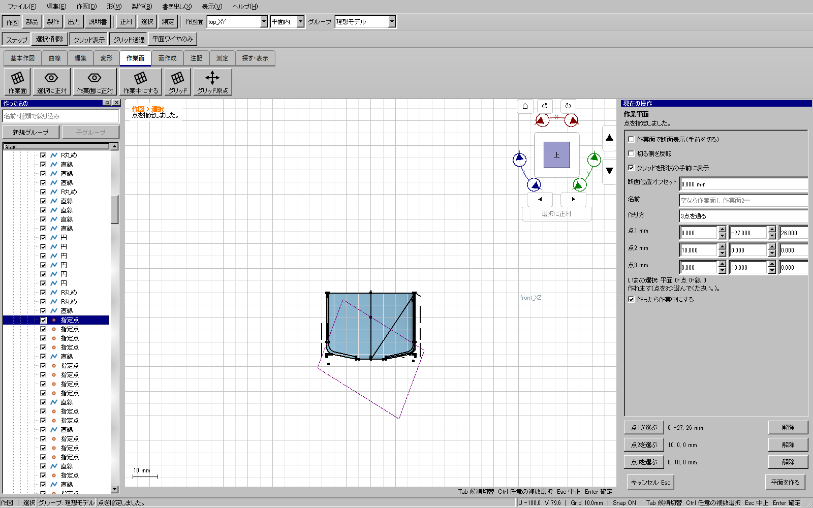
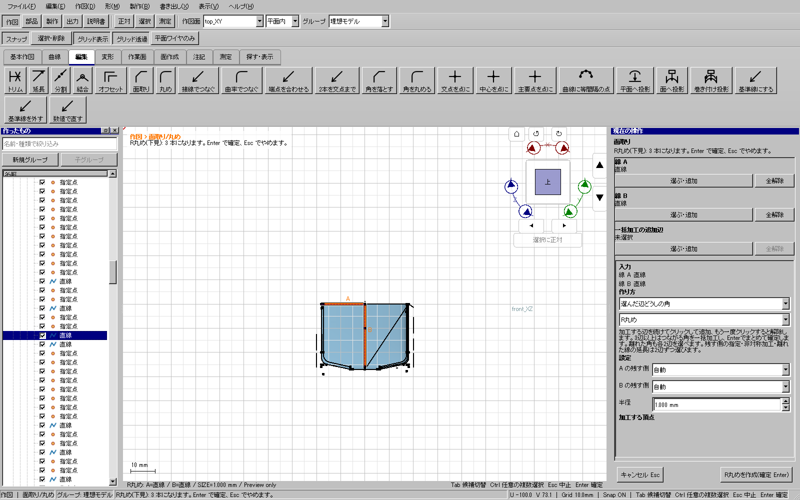

作業中。重点試験・全体試験・配布物の検証結果は確定後に追記する。
対象は3Dビューと左一覧の操作から、選んだ対象が目的の入力欄へ入るまで。ボタンが開くこと、文書からIDを直接代入できることを、対象指定の成功へ置き換えない。棚卸しは169コマンド（Tool41、Dialog57、Modeless4、Instant67）であり、169種類の幾何ツールという意味ではない。
作業面12項目、投影3方式、Boolean・トリム等6方式、厚みの配置／補正／出力／独立化、回転体3方式とロフト／スイープ、面生成10方式、面編集、部品の辺加工／シェル／分割、移動・複写・回転・対称・スケール／配列、近似4方針、測定5方式、作図の有効カード、寸法9方式、独立近似面2方式、曲面押し出し、終端面4方式、出力基準点を含める。各軸を個別に試すもので、無限にある数値・形状・全組合せの保証ではない。
試験は実際のQtマウス／キー入力で行い、入力欄・UUID・3D座標・他欄の保持を照合する。組立て用の幾何fixture作成は準備であり、人の操作の試験数には加えない。今回追加した試験と、従来の全ツール・出力・説明書・読み書き・履歴の全体ゲートを併せる。
複数辺のあるワイヤーの特定の辺、立体内部の特定の面・辺、線のどちらの端点か、面のどの位置かは、項目全体の名前から推測しない。必要箇所を3Dで指定する。点の数値入力や作図の座標入力と、既存オブジェクトの指定も区別する。
作業面の接平面・円筒軸など3項目、ロフト／スイープの未実装カードは、無効と理由表示を確認する。無効項目の検査を、その機能が使えるという合格には数えない。
追加した選択経路263件は失敗0（selection-final-focused-b-20261112）。その後、既存の押し出し→Boolean取消試験が、ツール中の一覧Ctrlクリックで2つ目の部品を保持できない不具合を検出した。修正後は同試験1件と、新しいCtrl追加・再クリック解除・Ctrl+Shift回帰1件が成功。従来のHP-TOOLS13件も成功した。全体・配布版ゲートでは追加264件を含めて新たに実行する。
添付コピー（revision953、393項目、SHA256 84c716b3e6af1ae8f87da4ee4df92226ef326b03e1e44f8c6ce7f84152125ede）で、作業面の通過点と線A/Bの2つの任意UI再生が成功した。初回wrapperに含まれる既存のBoolean取消試験1件は上記不具合で失敗し、修正後の個別再試験で成功した。失敗記録は残し、初回wrapper全体を成功とは記載しない。原本・コピーは保存していない。


さらに「選択・削除」で寸法入力を一時停止した間の一覧クリックを検査し、寸法欄へ混入することを修正前の実クリック回帰で再現、修正後に成功。復帰後に対象指定を続けられることも確認した。追加UIは計265件。初回の全体試験はこの確認中に中断し、不合格のまま保存した。初回配布通常起動の30秒timeoutも成功へ変更せず、同じ旧配布物と新開発版の通常起動2経路が個別に成功した後、新しい全体ゲートを行う。
次の配布UI1000件は追加265件が全て成功したが、従来の2件が不合格。1つは曲線への点配置が一覧入力の採用より前に下見を更新する問題で、名前編集回帰も実クリックへ改めて再現した。入力採用後に更新し、一時停止中は変更しないよう修正し、名前編集回帰が成功した。もう1つは通常ツールへのグループ一括入力の退行で、単一参照指定との区別を修正。既存フォルダー9件が成功した。グループ一括入力と点配置の2方式×2経路を追加し、最終追加数は270件とした。追加グループfixtureの作業面2つの所属順も整合させた。途中の2件失敗を全体成功には変更しない。
グループ回帰で使う後付け平面2つは原点面フラグも誤って複製されていた。通常作業面へ正し、所属と順序を整合して再検証した。グループ1件・点配置4件、名前編集1件・フォルダー9件が成功。事前9件も成功し、最終UI1005件（追加270件を含む）×開発/配布とCTest197件を実行する。
下表は従来のケースへの参照表であり、選択の全方式・生成結果が全て実証済みという表ではない。追加の経路試験と正式ゲートの実績は別に記録する。
| コマンド | 表示名 | 種類 | 従来ケース |
|---|---|---|---|
part.curved_emboss | 曲面押し出し | Tool | HP-COMMAND 台帳の全コマンドが同じ入口から呼べる / HP-COMMAND 未接続のコマンドが1つも無い / HP-COMMAND 案内が6つそろっている / HP-EMB-01 curved emboss selection preview outputs undo |
instructions.scene_editor | 画像エディター | Instant | HP-COMMAND 台帳の全コマンドが同じ入口から呼べる / HP-COMMAND 未接続のコマンドが1つも無い / HP-COMMAND 案内が6つそろっている |
instructions.sheet_editor | 用紙編集 | Instant | HP-COMMAND 台帳の全コマンドが同じ入口から呼べる / HP-COMMAND 未接続のコマンドが1つも無い / HP-COMMAND 案内が6つそろっている |
instructions.paper | 用紙サイズ | Tool | HP-COMMAND 台帳の全コマンドが同じ入口から呼べる / HP-COMMAND 未接続のコマンドが1つも無い / HP-COMMAND 案内が6つそろっている |
instructions.place_scene | 場面を配置 | Tool | HP-COMMAND 台帳の全コマンドが同じ入口から呼べる / HP-COMMAND 未接続のコマンドが1つも無い / HP-COMMAND 案内が6つそろっている |
instructions.insert_image | 画像を貼る | Dialog | HP-COMMAND 台帳の全コマンドが同じ入口から呼べる / HP-COMMAND 未接続のコマンドが1つも無い / HP-COMMAND 案内が6つそろっている |
instructions.new_page | 場面・用紙を追加 | Instant | HP-COMMAND 台帳の全コマンドが同じ入口から呼べる / HP-COMMAND 未接続のコマンドが1つも無い / HP-COMMAND 案内が6つそろっている |
instructions.duplicate | 場面・用紙を複製 | Instant | HP-COMMAND 台帳の全コマンドが同じ入口から呼べる / HP-COMMAND 未接続のコマンドが1つも無い / HP-COMMAND 案内が6つそろっている / HP-INSTRUCTIONS 3D model choice outlines arrows image export |
instructions.capture | 現在のモデルを選ぶ | Instant | HP-COMMAND 台帳の全コマンドが同じ入口から呼べる / HP-COMMAND 未接続のコマンドが1つも無い / HP-COMMAND 案内が6つそろっている / HP-INSTRUCTIONS 3D model choice outlines arrows image export |
instructions.move | 選択・移動 | Tool | HP-COMMAND 台帳の全コマンドが同じ入口から呼べる / HP-COMMAND 未接続のコマンドが1つも無い / HP-COMMAND 案内が6つそろっている / HP-INSTRUCTIONS 3D model choice outlines arrows image export |
instructions.arrow | 矢印 | Tool | HP-COMMAND 台帳の全コマンドが同じ入口から呼べる / HP-COMMAND 未接続のコマンドが1つも無い / HP-COMMAND 案内が6つそろっている / HP-INSTRUCTIONS 3D model choice outlines arrows image export |
instructions.text | 番号・文章 | Tool | HP-COMMAND 台帳の全コマンドが同じ入口から呼べる / HP-COMMAND 未接続のコマンドが1つも無い / HP-COMMAND 案内が6つそろっている / HP-INSTRUCTIONS 3D model choice outlines arrows image export |
instructions.remove | 図から除去 | Instant | HP-COMMAND 台帳の全コマンドが同じ入口から呼べる / HP-COMMAND 未接続のコマンドが1つも無い / HP-COMMAND 案内が6つそろっている |
instructions.save | 説明書を保存 | Dialog | HP-COMMAND 台帳の全コマンドが同じ入口から呼べる / HP-COMMAND 未接続のコマンドが1つも無い / HP-COMMAND 案内が6つそろっている |
instructions.open | 説明書を開く | Dialog | HP-COMMAND 台帳の全コマンドが同じ入口から呼べる / HP-COMMAND 未接続のコマンドが1つも無い / HP-COMMAND 案内が6つそろっている |
instructions.model_file | 別のモデルを読込 | Dialog | HP-COMMAND 台帳の全コマンドが同じ入口から呼べる / HP-COMMAND 未接続のコマンドが1つも無い / HP-COMMAND 案内が6つそろっている |
instructions.image | 場面・用紙を画像出力 | Dialog | HP-COMMAND 台帳の全コマンドが同じ入口から呼べる / HP-COMMAND 未接続のコマンドが1つも無い / HP-COMMAND 案内が6つそろっている |
instructions.pdf | 説明書PDF | Dialog | HP-COMMAND 台帳の全コマンドが同じ入口から呼べる / HP-COMMAND 未接続のコマンドが1つも無い / HP-COMMAND 案内が6つそろっている |
tools.search | 道具を検索 | Instant | HP-COMMAND 台帳の全コマンドが同じ入口から呼べる / HP-COMMAND 未接続のコマンドが1つも無い / HP-COMMAND 案内が6つそろっている / HP-ERGO-02 compact tool search / HP-INSTRUCTIONS 3D model choice outlines arrows image export / HP-UX-01 cross-mode tool search |
view.fit_selection | 選択にズーム | Instant | HP-COMMAND 台帳の全コマンドが同じ入口から呼べる / HP-COMMAND 未接続のコマンドが1つも無い / HP-COMMAND 案内が6つそろっている / HP-UX-02 persistent local view picking snapping restore |
view.isolate | 選択を局所表示 | Instant | HP-COMMAND 台帳の全コマンドが同じ入口から呼べる / HP-COMMAND 未接続のコマンドが1つも無い / HP-COMMAND 案内が6つそろっている / HP-UX-02 persistent local view picking snapping restore |
view.restore_isolation | 局所表示を解除 | Instant | HP-COMMAND 台帳の全コマンドが同じ入口から呼べる / HP-COMMAND 未接続のコマンドが1つも無い / HP-COMMAND 案内が6つそろっている |
image.place | 画像を貼る / 編集 | Tool | HP-CN-04 repeat corners preserves unpicked lines and image / HP-CN-05 two corners of one polyline / HP-CN-07 batch corners and image cache / HP-CN-08 polyline batch corners / HP-CN-09 full-length R1 corner / HP-COMMAND 台帳の全コマンドが同じ入口から呼べる / HP-COMMAND 未接続のコマンドが1つも無い / HP-COMMAND 案内が6つそろっている / HP-IMG-01 image placement persistence cancel and edit |
file.new | 新規 | Instant | GR 1つでも断られたら引きずった分は全部戻る / GR グループごと隠しても中身の設定は変わらない / GR グループの階層が保存して開き直しても残る / GR グループを作るのは1回の取り消しで戻る / GR グループを解いても中身は消えない / GR グループ各階層のカテゴリと子孫選択 / GR 一度に引きずった分は1回の取り消しで戻る / GR 引きずってグループへ移せる / GR 複数選んでグループにできる / HOの見本が保存して開き直しても残る / HP-AC-01 ほぼ真下へ引いた線は真下ちょうどになる / HP-AC-02 長さを打ち Tab で角度へ移って Enter で打ったとおりの線ができる / HP-AC-03 既存の直線の上のグリッドの点へ線の端がちょうど乗る / HP-AP-01 近似は 3D で押した対象が候補になり、押し直すと外れる / HP-AP-02 候補を押すと下見が変わり、Enter で同じ作り方が文書へ入る / HP-AP-03 作り方のカードが既定の候補を決め、押した候補が勝つ / HP-AP-04 曲げ状態の基準値は組立率を打って当てる道を通る / HP-AP-05 atama の面 2 枚を選んで 近似 を押すだけで縦割り 4 部材 × 2(角のレールつき)、横割りも選べる / HP-AP-06 対象の面が消えるかモードを替えると近似は解け、線が選べて消せる / HP-AP-07 近似モデルが 2 つあるとき、3D で押した面・一覧の「部材 n」のモデルが現在になり、曲げはそこへ当たり、帯が色分けされる / HP-AP-08 面を 2 枚作って片方を近似しても、もう片方の面は 3D に残る(逆向きの辺でも作り直せる) / HP-AP-SWITCH 面作成直後から近似へ移ると日常設定が表示される / HP-AR-01 配列の棚で個数を決めて確定すると並び、1回の取り消しで戻る / HP-AR-02 配列の棚は Esc で何も作らずに引っ込む / HP-AR-03 tool first explicit source role / HP-BO-01 足す引くは土台→相手へ自動で移り、札と欄に別々に出て押し直すと外れる / HP-BO-02 両方入ると実際の結果が下見に出て、Enter で 1回で戻せる部品になる / HP-BO-03 交差は重なりだけを残す部品になり1回で戻り開き直しても作り直せる / HP-BO-04 boolean preview release, cancel and retry / HP-BO-05 running job cancellation and saved retry / HP-CA-ROLE reverse order and clear retain other / HP-CN-01 面取りは道具 → A → B → 下見 → Enter、押し直すと外れる / HP-CN-02 丸めも同じ道で、Esc でやめると何も変わらない / HP-CN-03 面取りは直線と円弧の角も落とせる(押した側を残す) / HP-CN-04 repeat corners preserves unpicked lines and image / HP-CN-05 two corners of one polyline / HP-CN-06 面取りの棚で非対称の切戻しと残す側と頂点番号が効く / HP-CN-07 batch corners and image cache / HP-CN-08 polyline batch corners / HP-CN-09 full-length R1 corner / HP-COMMAND 台帳の全コマンドが同じ入口から呼べる / HP-COMMAND 未接続のコマンドが1つも無い / HP-COMMAND 案内が6つそろっている / HP-CT-01 接触境界ワイヤーのみ生成し元の両部品を保持 / HP-CT-02 KCDの3Dめり込み一覧から領域別に双方を削り保存再生成 / HP-CT-04 分割領域を選択して生成し保存再生成 / HP-CT-05 主画面で取消して再開し交差ワイヤーのみ生成 / HP-CT-06 ソリッドトリムのモード切替と境界ワイヤー保持 / HP-CT-07 surface and wire trim, cached regions and saved Undo / HP-CT-08 window wire cuts solid and retains boundaries / HP-CT-09 single picked solid face trims as an independent surface / HP-DEL-01 delete Undo Redo and drawing history remain independent / HP-DEL-02 individual rounded wire segment deletion / HP-DEL-03 native edges never duplicate or resurrect / HP-DEL-04 delete arc preserves straight segments / HP-DEL-05 multiple segments delete together / HP-DEL-06 unfinished drawing Undo keeps earlier deletion / HP-DEL-07 stale and dependent segment deletion refuses safely / HP-DEL-08 dependent deletion shows preview and supports cancel Undo Redo / HP-DEL-09 actual Delete key bypasses untyped cursor panel / HP-DEL-10 source edge deletion removes dependent solid after confirmation / HP-DIM-03 role replacement preserves the other input / HP-DM-01 作り方カードは道具に従い、押すと作り方が変わり、核に無いものは理由つき / HP-DM-02 3点のカードで 3 か所を押すと円弧ができる / HP-DM-03 スプラインは制御点と通過点を押せFitは理由つき、ベジェは 1 枚 / HP-DM-04 円は中心＋半径と直径指定のどちらでも画面から引ける / HP-DM-05 ベジェは制御点を4か所押すと1本できる / HP-DM-06 スプラインは制御点を4か所押して Enter で1本できる / HP-DM-07 円の3点は3か所を押すとその3点を通る円ができる / HP-DM-08 円弧の中心・始点・終点は半径が始点で決まり左回りにできる / HP-DM-09 スプラインの通過点は押した点をすべて通る / HP-DM-10 スケールは倍率でも基準の2点でも線の大きさを変え1回で戻る / HP-EMB-01 curved emboss selection preview outputs undo / HP-EX-01 拾って押して確定すると立体になる / HP-EX-02 道具を先に構えても Ctrl 無しで選べる / HP-EX-03 立体の面を画面から拾って押す / HP-EX-CAP distance orientation Undo save / HP-EX-CAP native face orientation save / HP-EX-LINE 曲面フェイスから線まで・保存再計算 / HP-EX-NATIVE 曲面フェイスの道具先行・取消・Undo・保存 / HP-EX-OUTPUT-01〜04 選んだ出力のとおりに作られる / HP-EX-OUTPUT-06 全部 OFF は確定できない / HP-EX-OUTPUT-07/08 演算は起きず、取り消しは1回で戻る / HP-EX-SNAP-01 下見と確定が同じ写しから作られる / HP-EX-WIRES stop end-only Undo save / HP-EX-WIRES stop wire only Undo save / HP-EX-WIRES stop wire plus solid Undo save / HP-FA-01 フェイスから作図と近似 / HP-FAB-01 面を拾い70%曲げからワイヤーを作る / HP-FL-01 フィレットは辺の近くを押して半径で丸め体積が式どおり減り1回で戻り開き直しても同じ / HP-FL-02 面取りは辺を何本でも押して選び押し直すと外れ距離で落とす / HP-FL-03 edge output choices and atomic undo / HP-GEN-01 自動生成・選択部材・短辺・近似面・保存 / HP-GN-01 生成の作り方カードは 現在/Flat/Target で、Target 100% は固定物を作る / HP-GN-02 Flat 0% は線を作り、近似モデルは残り、1回の取り消しで線が全部消える / HP-GN-03 輪郭 Wire は固定で作るものが部品でも線だけを作る / HP-GPT-01 外周・下見・確定・Undo/Redo・保存再読込 / HP-GPT-F04 従来帯近似の自動間隔・保存・型紙 / HP-GPT-F05 小さい前頭部9枚・最小幅4mmでも下見と確定 / HP-HEAVY 非表示の押し出し輪郭を開き直す / HP-IMG-01 image placement persistence cancel and edit / HP-IMG-02 curved projection and wrapping / HP-INT-01 context actions preserve unfinished input / HP-INT-02 activation and explicit apply across entry points / HP-INT-03 workplane tool-first and common keys / HP-LF-01 面にするは閉じた輪を全部見つけて面にし、元の線を残す / HP-LF-02 面にするはずれを言い、Enterで直線の端を寄せてから作る / HP-LF-03 面にするはEscで何も変えない / HP-LF-04 面にするはT字で線を分けてから輪を全部作り、1回の取り消しで戻る / HP-LF-05 面にするの棚で輪を外す・作り方を変える・ずれをそのままにできる / HP-LF-06 線を選ぶと事実の行(載る面・長さ・端のつながり)が出て、[寄せる]でその場で寄る / HP-LF-07 面にするは共有辺に連続の欄を出し、欄と Tab で G0→G1→G2 を回して作る / HP-LF-08 作った直後に「直前の操作」が出て、開いて直すと 1 回の取り消しで戻って構え直す / HP-LF-09 削除は面・作業平面にも効き、使われている線と原点の平面は理由を言って断る / HP-LF-10 オーナーの atama の 8 本(円弧 4・直線 4、T 字)を面にすると四辺面が 2 枚でき、面に格子が乗る / HP-LF-12 複合ワイヤーの枝と途中の接続から面を作る / HP-ME-02 面積は帯の測定から閉じた線の全体を測り厳密と言い寸法には残さない / HP-ME-03 測定を先に選んで線と位置を拾う / HP-NUM actual tool fields and geometry thickness / HP-NUM decimal dimensions / HP-NUM direction follows snap / HP-OPEN-01 Escape cancels saved vessel history with an armed editor and preserves Undo / HP-OPEN-02 crashed rebuild preserves document path and permits retry / HP-OPEN-03 invalid rebuilt geometry preserves original document / HP-OPEN-05 unsupported warped history preserves the old document / HP-OPEN-06 saved native cache, invalidation and corruption recovery / HP-OUT-01 選択先行と道具先行の出力・3Dプレビュー・混在形式 / HP-OUT-02 同一と別KCDの配置・BRep保存・Undo再生成 / HP-OUT-03 不正な配置を拒否し元文書を保持 / HP-OUT-04 近似の指定部材と生成配置の取消 / HP-OUT-05 3D選択と選び直し / HP-OUT-06 面と点の選択部分出力 / HP-PA-01 押し出しの棚に範囲 5 通り・方向 7 通りが並び、要る欄だけ生えて作る形へ届く / HP-PA-02 棚で選んだ左右対称が確定した立体に残る / HP-PA-03 ツール先行で輪郭を選び、非対称と反転を保存後も維持 / HP-PA-04 曲面を後から選び、直線方向に押し出して保存・再生成 / HP-PA-05 斜めの線の面まで押し出して保存・再生成 / HP-PA-06 任意曲面を終端として押し出し、保存・再生成 / HP-PA-07 Esc retains extrude settings and next profile can commit / HP-PA-08 direct surface stop and negative offset survive save / HP-PA-09 solid face terminal offset undo save / HP-PE-01 3D で部材を押すと「対象部材」欄がその番号になり PART の札が出る / HP-PERF-01 dense face hover and image compositing / HP-PF-01 道具の棚は共通の枠(節の並びとキャンセル・確定) / HP-PF-02 選んでから開く道具の棚も共通の枠 / HP-PF-03 作図の棚の共通とキャンセル・確定は本物 / HP-PL-01 部品の移動は2点の分だけ動き元は隠れ1回で戻り開き直しても同じ場所 / HP-PL-02 部品のミラーは線の向こうに同じ大きさで写し元は残す / HP-PL-03 部品のパターンは配列の棚で個数ぶん並び1回で戻る / HP-RB-01 帯はカテゴリ → 道具で、押した道具になる / HP-RB-03 帯はモードで入れ替わり、面作成は作り方つきで構える / HP-RS-01 5 つの撮影の場面が作れる / HP-RS-02 正本と見比べる場面(01〜10 とおまかせ・面の解析)がどれも作れる / HP-SA-01 面の解析の棚でゼブラ・ガウス曲率・U/V 線・境目・ずれを切り替え、平面はほぼ可展 / HP-SA-02 面を作るの下見も塗り、二重曲率を棚に出し、下見が消えれば塗りも消える / HP-SE-01 面を2枚作り、向かい合う縁を押して G1 でつなぎ、取り消しで消える / HP-SE-02 U/V 線を取り出し、平面を整えるのは断り、対称に写すと面が増える / HP-SE-03 隣り合う面の縁を押して G1 で合わせ、元の面は残り、取り消しで消える / HP-SECTION-01 workplane section clips triangles and restores geometry / HP-SF-01 面を作る棚と下見が見え、文書はまだ増えない / HP-SF-02 Enter で面が1枚できて棚が片付く / HP-SF-03 Esc で何も作らずやめる / HP-SF-04 作り方を変えても入れたものが消えない / HP-SF-05 5本の別ワイヤーを1輪郭として面と押し出しに使える / HP-SF-06 3D のクリックがどの欄へ入るかがいつも見えている / HP-SF-07 ロフトの断面順は採用順を出し、手動固定はそのまま生成順になる / HP-SF-08 回転体は道具 → 断面 → 軸(自動遷移)→ 下見 → Enter / HP-SF-10 境界面は外周と内側の線をまとめて選んでも外周を輪にし内側を通る線にする / HP-SF-11 ロフトは断面3本とガイド3本を普通のクリックで受けて全部を使う / HP-SF-12 四辺面を4辺から作り張り方を選べる / HP-SF-13 おまかせ: 線を押すだけで役割と作り方が決まり、理由と候補が出て、役割を直せる / HP-SH-01 シェルは面を押して選び押し直すと外れ肉厚で内側へ残し1回で戻り開き直しても同じ / HP-SH-02 分割は作業平面が部品を通らなければ断りずらすと両側を2つの部品にする / HP-SH-OUTPUT all output kinds themes preview undo and saved boundaries / HP-SO-01 回転体は輪郭と軸を押すと体積が予測と合い角度で割合どおり変わり1回で戻り開き直しても同じ / HP-SO-02 スイープは輪郭と経路を押すとまっすぐな経路で面積×長さの立体になる / HP-SO-03 ロフト立体は高さ違いの断面を押した順に通しガイド付きは理由つきで押せない / HP-SO-04 回転体は軸が輪郭を横切れば断り足すでは相手を押して確定で相手が隠れ1回で戻る / HP-ST-01 状態行と HUD がモード・道具・吸着・座標を映す / HP-ST-02 測定を重ねて Esc で元の道具へ戻る / HP-ST-03 測定の途中で道具を選び直せば戻り先を忘れる / HP-TH-01 面を3Dで拾い、作り方を選んで Enter すると部品になり、取り消しで消える / HP-TH-02 Esc は何も作らずにやめられ、同じ面を押し直すと欄が空になる / HP-TH-03 面を 2 枚押すと両方に厚みが付き、1 回の取り消しで両方消える / HP-TH-04 thickness preview release, cancel and retry / HP-TH-05 running job cancellation, UI response and saved retry / HP-TH-06 crashed calculation process preserves document and supports retry / HP-TH-07 actual complex smooth surface cancellation during kernel calculation / HP-TH-08 editable viewport and coalesced latest thickness preview / HP-TH-CORRECT explicit correction buttons and saved native rebuild / HP-TH-INDEPENDENT frozen solid and boundary survive source deletion and save / HP-TH-JIG-OUTPUT all jig outputs themes undo and saved results / HP-TH-OUTPUT all outputs placements to-plane themes and atomic saved results / HP-TOOLS preview shape ownership stays bounded / HP-TR-01 トリムは何も選ばず円の下側に置くと消える区間が見え押すと上半分の円弧になり1回で戻る / HP-TR-02 トリムは真ん中を押すと2本に分かれ交点の無い線は線ごと消える / HP-UF-01 展開のカードは3枚で、自動展開は展開ボタンから型紙まで通る / HP-UI-01 押し出しの最中は棚が見えている / HP-UI-02 選んだものが棚と 3D と一番下の行に出ている / HP-UI-03 右の欄へ打ったあとも Enter と Esc が効く / HP-WP-01 作業面の棚で作り方を選ぶと平面の下見が出て、作ると消える / HP-WP-AUTO automatic edit plane / HP-WP-ROLE point replacement keeps other points / HP-XP-01 一覧の節は正本の順で原点が先頭 / HP-XP-02 ◉ で1つずつ出し隠しでき、取り消しで戻る / HP-XP-03 3D と一覧の選択が両方向に同期する / HP-XP-04 右クリックの献立は正本の順で、グループへ移せる / HP-XP-05 collapse, nested groups, visibility, search and undo redo / PROFILE-03〜05/07 穴・複数・解除・開いた輪郭を画面で扱える / PROJ curved body outer wire with window hole Undo save / PROJ curved lamp ordinary storage face extrusion / PROJ curved lamp projected face extrusion / PROJ curved lamp wires and solid Undo save / PROJ curved lamp wires only Undo save / PROJ curved ordinary wire interior click extrusion / PROJ curved projected wire interior click extrusion / PROJ planar circle ordinary storage extrusion / PROJ planar circle projected storage extrusion / PROJ projected wire extrudes and survives save / PROJ 回り込み投影は1面から開始できる / RG-02 道具を先に構えても古い右の棚が残らない / RG-09 右は1枚で、数の棚は「数の設定」でだけ前に出る / RG-12 画面の文字に「まとまり」が残っていない / RG-14 狭い画面でも帯の道具が右端で切れない / オフセットは元を残し2線を交点まで合わせる / 交点に点と基準線が効く / 何も無いところから面を作り、方式を見比べて近似できる / 作業平面へ続けて正対しても前の相手を引きずらない / 保存して開き直すと同じものが戻る / 取り消した直後に古いリングが残らない / 向きの違う相手を複数選ぶと最初の1つの向きに合わせて全部を収める / 回転体は断面を軸のまわりに回して形状ガイドを作る / 回転体は選んだ断面を全部回し最後の直線を軸にする / 場面を差し替えると吸着の持ち越しが消える / 形から中心や端点に点を作れる / 役割表から平面を作り開き直しても戻る / 戻すと画面の線も消えやり直すと戻る / 押し出しが選択を読んで次を案内する / 押し出した部品が保存して開き直しても残る / 押し出しの隣接区画を切り替えて保存できる / 押し出しは1回の取り消しで完全に戻る / 新しい文書にも原点の3面がある / 曲げ半径は部材ごとに持ち、保存して開き直しても形ごと残る / 棚で選んだ向きが矢印と確定と保存まで通る / 棚で選んだ演算のまま作られる / 治具は当たり面と当て板を作り一度で戻る / 立体そのものを選んでも正対を断らない / 立体の面へ正対できる / 組立率と半径はどちらから打っても同じことを言い、当てるまで文書は変わらない / 製作の表示は元の面と近似の姿を出し分け文書は変えない / 視点を切り替えられる / 角の加工でポリラインの角が落ちて丸まる / 詳細の窓で選んだ向きが矢印と確定と次回まで通る / 読めない部材番号では半径を出さず、理由を出す / 輪郭 2 つの押し出しは部品ごとに自分の輪郭を持ち開き直しても別の場所にある / 輪郭と作業平面が別の向きでも棚の表示どおりに押せる / 近似は1回の取り消しで戻り、保存して開き直しても残る / 近似を0/50/70/100%へ動かし、途中の状態から線と面を作れる / 近似モデルは文書に入り開き直しても戻る / 道具を替えると前の吸着と候補送りが消える / 違う平面の輪郭の足すは前の結果を次の相手につなぎ1回で戻る / 違う平面の輪郭は平面ごとに押し出し下見に全部出て1回で戻る / 部材は何枚にでも等分でき隣り合う何枚でも1枚にでき1回で戻り位置も選べる / 部材を1つにする・分けるが本当に分け方を変える / 面に厚みを付けて立体にできる / 面の押し引きは保存して開き直しても残る / 面を平面まで立体にできる |
file.open | 開く | Dialog | HP-COMMAND 台帳の全コマンドが同じ入口から呼べる / HP-COMMAND 未接続のコマンドが1つも無い / HP-COMMAND 案内が6つそろっている / HP-OPEN-01 Escape cancels saved vessel history with an armed editor and preserves Undo / HP-OPEN-02 crashed rebuild preserves document path and permits retry / HP-OPEN-03 invalid rebuilt geometry preserves original document / HP-OPEN-05 unsupported warped history preserves the old document / 出す先を尋ねてやめられる |
file.save | 保存 | Instant | HP-COMMAND 台帳の全コマンドが同じ入口から呼べる / HP-COMMAND 未接続のコマンドが1つも無い / HP-COMMAND 案内が6つそろっている / HP-OPEN-01 Escape cancels saved vessel history with an armed editor and preserves Undo / HP-OPEN-02 crashed rebuild preserves document path and permits retry / HP-OPEN-03 invalid rebuilt geometry preserves original document / HP-OPEN-04 prepared open preserves metadata and unknown archive entries / HP-OPEN-05 unsupported warped history preserves the old document |
file.save_as | 名前を付けて保存 | Dialog | GR グループの階層が保存して開き直しても残る / GR グループ各階層のカテゴリと子孫選択 / HOの見本が保存して開き直しても残る / HP-BO-03 交差は重なりだけを残す部品になり1回で戻り開き直しても作り直せる / HP-BO-05 running job cancellation and saved retry / HP-COMMAND 台帳の全コマンドが同じ入口から呼べる / HP-COMMAND 未接続のコマンドが1つも無い / HP-COMMAND 案内が6つそろっている / HP-CT-01 接触境界ワイヤーのみ生成し元の両部品を保持 / HP-CT-02 KCDの3Dめり込み一覧から領域別に双方を削り保存再生成 / HP-CT-04 分割領域を選択して生成し保存再生成 / HP-CT-05 主画面で取消して再開し交差ワイヤーのみ生成 / HP-CT-06 ソリッドトリムのモード切替と境界ワイヤー保持 / HP-CT-07 surface and wire trim, cached regions and saved Undo / HP-CT-08 window wire cuts solid and retains boundaries / HP-CT-09 single picked solid face trims as an independent surface / HP-DEL-01 delete Undo Redo and drawing history remain independent / HP-DEL-02 individual rounded wire segment deletion / HP-DEL-03 native edges never duplicate or resurrect / HP-DEL-04 delete arc preserves straight segments / HP-DEL-05 multiple segments delete together / HP-DEL-08 dependent deletion shows preview and supports cancel Undo Redo / HP-DEL-10 source edge deletion removes dependent solid after confirmation / HP-EMB-01 curved emboss selection preview outputs undo / HP-EX-CAP distance orientation Undo save / HP-EX-CAP native face orientation save / HP-EX-LINE 曲面フェイスから線まで・保存再計算 / HP-EX-NATIVE 曲面フェイスの道具先行・取消・Undo・保存 / HP-EX-WIRES stop end-only Undo save / HP-EX-WIRES stop wire only Undo save / HP-EX-WIRES stop wire plus solid Undo save / HP-FA-01 フェイスから作図と近似 / HP-FL-01 フィレットは辺の近くを押して半径で丸め体積が式どおり減り1回で戻り開き直しても同じ / HP-GEN-01 自動生成・選択部材・短辺・近似面・保存 / HP-GPT-01 外周・下見・確定・Undo/Redo・保存再読込 / HP-GPT-F04 従来帯近似の自動間隔・保存・型紙 / HP-GPT-F05 小さい前頭部9枚・最小幅4mmでも下見と確定 / HP-HEAVY 非表示の押し出し輪郭を開き直す / HP-IMG-01 image placement persistence cancel and edit / HP-IMG-02 curved projection and wrapping / HP-INSTRUCTIONS 3D model choice outlines arrows image export / HP-LF-12 複合ワイヤーの枝と途中の接続から面を作る / HP-OPEN-01 Escape cancels saved vessel history with an armed editor and preserves Undo / HP-OPEN-02 crashed rebuild preserves document path and permits retry / HP-OPEN-03 invalid rebuilt geometry preserves original document / HP-OPEN-05 unsupported warped history preserves the old document / HP-OPEN-06 saved native cache, invalidation and corruption recovery / HP-OUT-02 同一と別KCDの配置・BRep保存・Undo再生成 / HP-PA-03 ツール先行で輪郭を選び、非対称と反転を保存後も維持 / HP-PA-04 曲面を後から選び、直線方向に押し出して保存・再生成 / HP-PA-05 斜めの線の面まで押し出して保存・再生成 / HP-PA-06 任意曲面を終端として押し出し、保存・再生成 / HP-PA-08 direct surface stop and negative offset survive save / HP-PA-09 solid face terminal offset undo save / HP-PL-01 部品の移動は2点の分だけ動き元は隠れ1回で戻り開き直しても同じ場所 / HP-SH-01 シェルは面を押して選び押し直すと外れ肉厚で内側へ残し1回で戻り開き直しても同じ / HP-SH-02 分割は作業平面が部品を通らなければ断りずらすと両側を2つの部品にする / HP-SH-OUTPUT all output kinds themes preview undo and saved boundaries / HP-SO-01 回転体は輪郭と軸を押すと体積が予測と合い角度で割合どおり変わり1回で戻り開き直しても同じ / HP-TH-05 running job cancellation, UI response and saved retry / HP-TH-06 crashed calculation process preserves document and supports retry / HP-TH-07 actual complex smooth surface cancellation during kernel calculation / HP-TH-CORRECT explicit correction buttons and saved native rebuild / HP-TH-INDEPENDENT frozen solid and boundary survive source deletion and save / HP-TH-JIG-OUTPUT all jig outputs themes undo and saved results / HP-TH-OUTPUT all outputs placements to-plane themes and atomic saved results / HP-TOOLS preview shape ownership stays bounded / PROJ curved body outer wire with window hole Undo save / PROJ curved lamp ordinary storage face extrusion / PROJ curved lamp projected face extrusion / PROJ curved lamp wires and solid Undo save / PROJ curved lamp wires only Undo save / PROJ curved ordinary wire interior click extrusion / PROJ curved projected wire interior click extrusion / PROJ panorama two workplanes per-row directions / PROJ planar circle ordinary storage extrusion / PROJ planar circle projected storage extrusion / PROJ projected wire extrudes and survives save / 保存して開き直すと同じものが戻る / 出す先を尋ねてやめられる / 役割表から平面を作り開き直しても戻る / 押し出した部品が保存して開き直しても残る / 押し出しの隣接区画を切り替えて保存できる / 曲げ半径は部材ごとに持ち、保存して開き直しても形ごと残る / 輪郭 2 つの押し出しは部品ごとに自分の輪郭を持ち開き直しても別の場所にある / 近似は1回の取り消しで戻り、保存して開き直しても残る / 近似モデルは文書に入り開き直しても戻る / 違う平面の輪郭は平面ごとに押し出し下見に全部出て1回で戻る / 部材を1つにする・分けるが本当に分け方を変える / 面に厚みを付けて立体にできる / 面の押し引きは保存して開き直しても残る / 面を平面まで立体にできる |
edit.undo | 元に戻す | Instant | GR グループを作るのは1回の取り消しで戻る / GR グループを解いても中身は消えない / GR 一度に引きずった分は1回の取り消しで戻る / HP-AP-02 候補を押すと下見が変わり、Enter で同じ作り方が文書へ入る / HP-AP-05 atama の面 2 枚を選んで 近似 を押すだけで縦割り 4 部材 × 2(角のレールつき)、横割りも選べる / HP-AP-06 対象の面が消えるかモードを替えると近似は解け、線が選べて消せる / HP-AP-08 面を 2 枚作って片方を近似しても、もう片方の面は 3D に残る(逆向きの辺でも作り直せる) / HP-AR-01 配列の棚で個数を決めて確定すると並び、1回の取り消しで戻る / HP-BO-02 両方入ると実際の結果が下見に出て、Enter で 1回で戻せる部品になる / HP-BO-03 交差は重なりだけを残す部品になり1回で戻り開き直しても作り直せる / HP-BO-04 boolean preview release, cancel and retry / HP-BO-05 running job cancellation and saved retry / HP-CN-01 面取りは道具 → A → B → 下見 → Enter、押し直すと外れる / HP-CN-03 面取りは直線と円弧の角も落とせる(押した側を残す) / HP-CN-04 repeat corners preserves unpicked lines and image / HP-CN-05 two corners of one polyline / HP-CN-07 batch corners and image cache / HP-CN-08 polyline batch corners / HP-CN-09 full-length R1 corner / HP-COMMAND 台帳の全コマンドが同じ入口から呼べる / HP-COMMAND 未接続のコマンドが1つも無い / HP-COMMAND 案内が6つそろっている / HP-CT-02 KCDの3Dめり込み一覧から領域別に双方を削り保存再生成 / HP-CT-05 主画面で取消して再開し交差ワイヤーのみ生成 / HP-CT-06 ソリッドトリムのモード切替と境界ワイヤー保持 / HP-CT-07 surface and wire trim, cached regions and saved Undo / HP-CT-08 window wire cuts solid and retains boundaries / HP-DEL-01 delete Undo Redo and drawing history remain independent / HP-DEL-02 individual rounded wire segment deletion / HP-DEL-03 native edges never duplicate or resurrect / HP-DEL-04 delete arc preserves straight segments / HP-DEL-05 multiple segments delete together / HP-DEL-06 unfinished drawing Undo keeps earlier deletion / HP-DEL-07 stale and dependent segment deletion refuses safely / HP-DEL-08 dependent deletion shows preview and supports cancel Undo Redo / HP-DEL-10 source edge deletion removes dependent solid after confirmation / HP-DM-10 スケールは倍率でも基準の2点でも線の大きさを変え1回で戻る / HP-EMB-01 curved emboss selection preview outputs undo / HP-EX-CAP distance orientation Undo save / HP-EX-NATIVE 曲面フェイスの道具先行・取消・Undo・保存 / HP-EX-OUTPUT-07/08 演算は起きず、取り消しは1回で戻る / HP-EX-UI tool first settings and direction pick / HP-EX-WIRES stop end-only Undo save / HP-EX-WIRES stop wire only Undo save / HP-EX-WIRES stop wire plus solid Undo save / HP-FL-01 フィレットは辺の近くを押して半径で丸め体積が式どおり減り1回で戻り開き直しても同じ / HP-FL-03 edge output choices and atomic undo / HP-GEN-01 自動生成・選択部材・短辺・近似面・保存 / HP-GEN-04 選択部材の0・37・100%生成形状 / HP-GN-01 生成の作り方カードは 現在/Flat/Target で、Target 100% は固定物を作る / HP-GN-02 Flat 0% は線を作り、近似モデルは残り、1回の取り消しで線が全部消える / HP-GPT-01 外周・下見・確定・Undo/Redo・保存再読込 / HP-IMG-01 image placement persistence cancel and edit / HP-IMG-03 image drag preview cancel commit undo / HP-INSTRUCTIONS 3D model choice outlines arrows image export / HP-INSTRUCTIONS-SHEETS scenes live paper raster fonts export / HP-LF-01 面にするは閉じた輪を全部見つけて面にし、元の線を残す / HP-LF-02 面にするはずれを言い、Enterで直線の端を寄せてから作る / HP-LF-04 面にするはT字で線を分けてから輪を全部作り、1回の取り消しで戻る / HP-LF-05 面にするの棚で輪を外す・作り方を変える・ずれをそのままにできる / HP-LF-06 線を選ぶと事実の行(載る面・長さ・端のつながり)が出て、[寄せる]でその場で寄る / HP-LF-07 面にするは共有辺に連続の欄を出し、欄と Tab で G0→G1→G2 を回して作る / HP-LF-08 作った直後に「直前の操作」が出て、開いて直すと 1 回の取り消しで戻って構え直す / HP-LF-09 削除は面・作業平面にも効き、使われている線と原点の平面は理由を言って断る / HP-LF-10 オーナーの atama の 8 本(円弧 4・直線 4、T 字)を面にすると四辺面が 2 枚でき、面に格子が乗る / HP-LF-12 複合ワイヤーの枝と途中の接続から面を作る / HP-OPEN-01 Escape cancels saved vessel history with an armed editor and preserves Undo / HP-OPEN-02 crashed rebuild preserves document path and permits retry / HP-OPEN-03 invalid rebuilt geometry preserves original document / HP-OPEN-05 unsupported warped history preserves the old document / HP-OUT-02 同一と別KCDの配置・BRep保存・Undo再生成 / HP-PA-09 solid face terminal offset undo save / HP-PL-01 部品の移動は2点の分だけ動き元は隠れ1回で戻り開き直しても同じ場所 / HP-PL-03 部品のパターンは配列の棚で個数ぶん並び1回で戻る / HP-SE-01 面を2枚作り、向かい合う縁を押して G1 でつなぎ、取り消しで消える / HP-SE-02 U/V 線を取り出し、平面を整えるのは断り、対称に写すと面が増える / HP-SE-03 隣り合う面の縁を押して G1 で合わせ、元の面は残り、取り消しで消える / HP-SF-08 回転体は道具 → 断面 → 軸(自動遷移)→ 下見 → Enter / HP-SH-01 シェルは面を押して選び押し直すと外れ肉厚で内側へ残し1回で戻り開き直しても同じ / HP-SH-02 分割は作業平面が部品を通らなければ断りずらすと両側を2つの部品にする / HP-SH-OUTPUT all output kinds themes preview undo and saved boundaries / HP-SO-01 回転体は輪郭と軸を押すと体積が予測と合い角度で割合どおり変わり1回で戻り開き直しても同じ / HP-SO-04 回転体は軸が輪郭を横切れば断り足すでは相手を押して確定で相手が隠れ1回で戻る / HP-TH-01 面を3Dで拾い、作り方を選んで Enter すると部品になり、取り消しで消える / HP-TH-03 面を 2 枚押すと両方に厚みが付き、1 回の取り消しで両方消える / HP-TH-04 thickness preview release, cancel and retry / HP-TH-05 running job cancellation, UI response and saved retry / HP-TH-08 editable viewport and coalesced latest thickness preview / HP-TH-CORRECT explicit correction buttons and saved native rebuild / HP-TH-INDEPENDENT frozen solid and boundary survive source deletion and save / HP-TH-JIG-OUTPUT all jig outputs themes undo and saved results / HP-TH-OUTPUT all outputs placements to-plane themes and atomic saved results / HP-TR-01 トリムは何も選ばず円の下側に置くと消える区間が見え押すと上半分の円弧になり1回で戻る / HP-WP-AUTO automatic edit plane / HP-XP-02 ◉ で1つずつ出し隠しでき、取り消しで戻る / HP-XP-05 collapse, nested groups, visibility, search and undo redo / PROJ curved body outer wire with window hole Undo save / PROJ curved lamp ordinary storage face extrusion / PROJ curved lamp projected face extrusion / PROJ curved lamp wires and solid Undo save / PROJ curved lamp wires only Undo save / PROJ curved ordinary wire interior click extrusion / PROJ curved projected wire interior click extrusion / PROJ native region output and Undo / PROJ panorama two workplanes per-row directions / PROJ planar circle ordinary storage extrusion / PROJ planar circle projected storage extrusion / PROJ preview commit Undo save reopen / PROJ projected wire extrudes and survives save / 交点に点と基準線が効く / 何も無いところから面を作り、方式を見比べて近似できる / 回転体は断面を軸のまわりに回して形状ガイドを作る / 回転体は選んだ断面を全部回し最後の直線を軸にする / 場面を差し替えると吸着の持ち越しが消える / 形から中心や端点に点を作れる / 戻すと画面の線も消えやり直すと戻る / 押し出しは1回の取り消しで完全に戻る / 曲げ半径は部材ごとに持ち、保存して開き直しても形ごと残る / 治具は当たり面と当て板を作り一度で戻る / 直線に並べて一度で戻せる / 移動と複製が本当に効く / 組立率を変えると本当に曲がる / 編集の棚で直線の点と長さ・角度を直せる / 補助線として作図し指定点を残せる / 製作の棚の範囲と材料・積層が効く / 角の加工は何本選んでも線ごとに作り1回で戻る / 近似は1回の取り消しで戻り、保存して開き直しても残る / 違う平面の輪郭の足すは前の結果を次の相手につなぎ1回で戻る / 違う平面の輪郭は平面ごとに押し出し下見に全部出て1回で戻る / 部材は何枚にでも等分でき隣り合う何枚でも1枚にでき1回で戻り位置も選べる / 部材を1つにする・分けるが本当に分け方を変える / 面の押し引きは1回の取り消しとやり直しで往復する |
edit.redo | やり直す | Instant | GR グループを作るのは1回の取り消しで戻る / GR 一度に引きずった分は1回の取り消しで戻る / HP-AP-08 面を 2 枚作って片方を近似しても、もう片方の面は 3D に残る(逆向きの辺でも作り直せる) / HP-BO-03 交差は重なりだけを残す部品になり1回で戻り開き直しても作り直せる / HP-BO-04 boolean preview release, cancel and retry / HP-BO-05 running job cancellation and saved retry / HP-CN-04 repeat corners preserves unpicked lines and image / HP-CN-05 two corners of one polyline / HP-COMMAND 台帳の全コマンドが同じ入口から呼べる / HP-COMMAND 未接続のコマンドが1つも無い / HP-COMMAND 案内が6つそろっている / HP-CT-02 KCDの3Dめり込み一覧から領域別に双方を削り保存再生成 / HP-CT-06 ソリッドトリムのモード切替と境界ワイヤー保持 / HP-CT-07 surface and wire trim, cached regions and saved Undo / HP-CT-08 window wire cuts solid and retains boundaries / HP-DEL-01 delete Undo Redo and drawing history remain independent / HP-DEL-02 individual rounded wire segment deletion / HP-DEL-03 native edges never duplicate or resurrect / HP-DEL-04 delete arc preserves straight segments / HP-DEL-05 multiple segments delete together / HP-DEL-06 unfinished drawing Undo keeps earlier deletion / HP-DEL-07 stale and dependent segment deletion refuses safely / HP-DEL-08 dependent deletion shows preview and supports cancel Undo Redo / HP-DEL-10 source edge deletion removes dependent solid after confirmation / HP-EMB-01 curved emboss selection preview outputs undo / HP-EX-CAP distance orientation Undo save / HP-EX-NATIVE 曲面フェイスの道具先行・取消・Undo・保存 / HP-EX-WIRES stop end-only Undo save / HP-EX-WIRES stop wire only Undo save / HP-EX-WIRES stop wire plus solid Undo save / HP-FL-01 フィレットは辺の近くを押して半径で丸め体積が式どおり減り1回で戻り開き直しても同じ / HP-GPT-01 外周・下見・確定・Undo/Redo・保存再読込 / HP-IMG-01 image placement persistence cancel and edit / HP-IMG-03 image drag preview cancel commit undo / HP-INSTRUCTIONS 3D model choice outlines arrows image export / HP-INSTRUCTIONS-SHEETS scenes live paper raster fonts export / HP-LF-12 複合ワイヤーの枝と途中の接続から面を作る / HP-OPEN-01 Escape cancels saved vessel history with an armed editor and preserves Undo / HP-OPEN-02 crashed rebuild preserves document path and permits retry / HP-OPEN-03 invalid rebuilt geometry preserves original document / HP-OPEN-05 unsupported warped history preserves the old document / HP-OUT-02 同一と別KCDの配置・BRep保存・Undo再生成 / HP-PA-09 solid face terminal offset undo save / HP-PL-01 部品の移動は2点の分だけ動き元は隠れ1回で戻り開き直しても同じ場所 / HP-SH-01 シェルは面を押して選び押し直すと外れ肉厚で内側へ残し1回で戻り開き直しても同じ / HP-SH-02 分割は作業平面が部品を通らなければ断りずらすと両側を2つの部品にする / HP-SH-OUTPUT all output kinds themes preview undo and saved boundaries / HP-SO-01 回転体は輪郭と軸を押すと体積が予測と合い角度で割合どおり変わり1回で戻り開き直しても同じ / HP-TH-04 thickness preview release, cancel and retry / HP-TH-05 running job cancellation, UI response and saved retry / HP-TH-08 editable viewport and coalesced latest thickness preview / HP-TH-CORRECT explicit correction buttons and saved native rebuild / HP-TH-INDEPENDENT frozen solid and boundary survive source deletion and save / HP-TH-JIG-OUTPUT all jig outputs themes undo and saved results / HP-TH-OUTPUT all outputs placements to-plane themes and atomic saved results / HP-XP-05 collapse, nested groups, visibility, search and undo redo / PROJ curved body outer wire with window hole Undo save / PROJ curved lamp ordinary storage face extrusion / PROJ curved lamp projected face extrusion / PROJ curved lamp wires and solid Undo save / PROJ curved lamp wires only Undo save / PROJ curved ordinary wire interior click extrusion / PROJ curved projected wire interior click extrusion / PROJ panorama two workplanes per-row directions / PROJ planar circle ordinary storage extrusion / PROJ planar circle projected storage extrusion / PROJ projected wire extrudes and survives save / 場面を差し替えると吸着の持ち越しが消える / 戻すと画面の線も消えやり直すと戻る / 押し出しは1回の取り消しで完全に戻る / 曲げ半径は部材ごとに持ち、保存して開き直しても形ごと残る / 移動と複製が本当に効く / 近似は1回の取り消しで戻り、保存して開き直しても残る / 違う平面の輪郭は平面ごとに押し出し下見に全部出て1回で戻る / 部材を1つにする・分けるが本当に分け方を変える / 面の押し引きは1回の取り消しとやり直しで往復する |
edit.delete | 削除 | Instant | HP-AP-06 対象の面が消えるかモードを替えると近似は解け、線が選べて消せる / HP-COMMAND 台帳の全コマンドが同じ入口から呼べる / HP-COMMAND 未接続のコマンドが1つも無い / HP-COMMAND 案内が6つそろっている / HP-DEL-01 delete Undo Redo and drawing history remain independent / HP-DEL-02 individual rounded wire segment deletion / HP-DEL-03 native edges never duplicate or resurrect / HP-DEL-04 delete arc preserves straight segments / HP-DEL-05 multiple segments delete together / HP-DEL-06 unfinished drawing Undo keeps earlier deletion / HP-DEL-07 stale and dependent segment deletion refuses safely / HP-DEL-08 dependent deletion shows preview and supports cancel Undo Redo / HP-DEL-09 actual Delete key bypasses untyped cursor panel / HP-DEL-10 source edge deletion removes dependent solid after confirmation / HP-LF-09 削除は面・作業平面にも効き、使われている線と原点の平面は理由を言って断る / HP-TH-INDEPENDENT frozen solid and boundary survive source deletion and save |
view.hide_selected | 選択を隠す | Instant | HP-COMMAND 台帳の全コマンドが同じ入口から呼べる / HP-COMMAND 未接続のコマンドが1つも無い / HP-COMMAND 案内が6つそろっている / HP-DEL-03 native edges never duplicate or resurrect / HP-HEAVY 非表示の押し出し輪郭を開き直す / 隠した形は画面からも消える |
view.show_all | すべて表示 | Instant | HP-COMMAND 台帳の全コマンドが同じ入口から呼べる / HP-COMMAND 未接続のコマンドが1つも無い / HP-COMMAND 案内が6つそろっている / HP-DEL-03 native edges never duplicate or resurrect / 隠した形は画面からも消える |
selection.activate | 選択 | Tool | HP-COMMAND 台帳の全コマンドが同じ入口から呼べる / HP-COMMAND 未接続のコマンドが1つも無い / HP-COMMAND 案内が6つそろっている / HP-CT-06 ソリッドトリムのモード切替と境界ワイヤー保持 / HP-CT-08 window wire cuts solid and retains boundaries / HP-DEL-02 individual rounded wire segment deletion / HP-DEL-03 native edges never duplicate or resurrect / HP-DEL-04 delete arc preserves straight segments / HP-DEL-05 multiple segments delete together / HP-DEL-08 dependent deletion shows preview and supports cancel Undo Redo / HP-DEL-10 source edge deletion removes dependent solid after confirmation / HP-ERGO-02 compact tool search / HP-EX-REPEAT commit and lost mouse release / HP-INT-01 context actions preserve unfinished input / HP-PA-05 斜めの線の面まで押し出して保存・再生成 / HP-PERF-01 dense face hover and image compositing / HP-UX-01 cross-mode tool search / HP-WP-AUTO automatic edit plane / PROJ curved body outer wire with window hole Undo save / PROJ curved lamp ordinary storage face extrusion / PROJ curved lamp projected face extrusion / PROJ curved lamp wires and solid Undo save / PROJ curved lamp wires only Undo save / PROJ curved ordinary wire interior click extrusion / PROJ curved projected wire interior click extrusion / PROJ direct tree inputs and lifecycle / PROJ explicit planar profile interior over a solid / PROJ panorama two workplanes per-row directions / PROJ planar circle ordinary storage extrusion / PROJ planar circle projected storage extrusion / RG-02 道具を先に構えても古い右の棚が残らない / RG-15 治具は道具と対象を選んだ後に確定する / 塗った形を画面で掴める / 立体の面をつまんで押せる / 面の押し引きをやめても文書が変わらない |
dimension.open | 寸法 | Modeless | HP-COMMAND 台帳の全コマンドが同じ入口から呼べる / HP-COMMAND 未接続のコマンドが1つも無い / HP-COMMAND 案内が6つそろっている / HP-DIM-01 寸法作成と編集を続ける / HP-DIM-02 Win95寸法操作 / HP-DIM-03 role replacement preserves the other input / HP-TOOLS exclusive tool transition matrix and shortcuts |
measure.open | 測定 | Modeless | HP-COMMAND 台帳の全コマンドが同じ入口から呼べる / HP-COMMAND 未接続のコマンドが1つも無い / HP-COMMAND 案内が6つそろっている / HP-ME-01 測定の3モードと寸法を残す / HP-ME-02 面積は帯の測定から閉じた線の全体を測り厳密と言い寸法には残さない / HP-ME-03 測定を先に選んで線と位置を拾う / HP-RS-01 5 つの撮影の場面が作れる / HP-ST-02 測定を重ねて Esc で元の道具へ戻る / HP-ST-03 測定の途中で道具を選び直せば戻り先を忘れる / RG-02 道具を先に構えても古い右の棚が残らない / 測る棚が選んだものを測る |
edit.numeric | 数値で編集 | Modeless | HP-COMMAND 台帳の全コマンドが同じ入口から呼べる / HP-COMMAND 未接続のコマンドが1つも無い / HP-COMMAND 案内が6つそろっている / HP-ME-03 測定を先に選んで線と位置を拾う / 編集の棚で作業平面を動かし原点面は断る / 編集の棚で円の半径を変えられる / 編集の棚で直線の点と長さ・角度を直せる |
view.fit_all | 全体表示 | Instant | HP-COMMAND 台帳の全コマンドが同じ入口から呼べる / HP-COMMAND 未接続のコマンドが1つも無い / HP-COMMAND 案内が6つそろっている / HP-IMG-01 image placement persistence cancel and edit / HP-IMG-02 curved projection and wrapping / HP-PA-04 曲面を後から選び、直線方向に押し出して保存・再生成 / HP-TH-08 editable viewport and coalesced latest thickness preview / 面の押し引きをやめても文書が変わらない |
view.align_selection | 選択に正対 | Instant | HOの見本で作業平面と面へ正対できる / HP-COMMAND 台帳の全コマンドが同じ入口から呼べる / HP-COMMAND 未接続のコマンドが1つも無い / HP-COMMAND 案内が6つそろっている / キューブもボタンも押した道で掴める / 作業平面へ続けて正対しても前の相手を引きずらない / 向きの違う相手を複数選ぶと最初の1つの向きに合わせて全部を収める / 正対は平面を選ばないと理由を出す / 立体そのものを選んでも正対を断らない / 立体の面へ正対できる / 選択に正対すると、その面が画面の真ん中に来る |
view.align_selection_back | 反対側から正対 | Instant | HP-COMMAND 台帳の全コマンドが同じ入口から呼べる / HP-COMMAND 未接続のコマンドが1つも無い / HP-COMMAND 案内が6つそろっている / 立体の面へ正対できる |
view.align_workplane | 正対 | Instant | HP-COMMAND 台帳の全コマンドが同じ入口から呼べる / HP-COMMAND 未接続のコマンドが1つも無い / HP-COMMAND 案内が6つそろっている / 上の帯の作図面コンボで切り替わり、正対はその面を向く |
view.display_settings | 表示設定 | Dialog | HP-COMMAND 台帳の全コマンドが同じ入口から呼べる / HP-COMMAND 未接続のコマンドが1つも無い / HP-COMMAND 案内が6つそろっている / 表示の棚で太さ・様式・色と段が変わる |
view.number_settings | 数の設定 | Dialog | HP-COMMAND 台帳の全コマンドが同じ入口から呼べる / HP-COMMAND 未接続のコマンドが1つも無い / HP-COMMAND 案内が6つそろっている / RG-09 右は1枚で、数の棚は「数の設定」でだけ前に出る |
view.surface_analysis | 面の解析 | Dialog | HP-COMMAND 台帳の全コマンドが同じ入口から呼べる / HP-COMMAND 未接続のコマンドが1つも無い / HP-COMMAND 案内が6つそろっている / HP-RS-02 正本と見比べる場面(01〜10 とおまかせ・面の解析)がどれも作れる / HP-SA-01 面の解析の棚でゼブラ・ガウス曲率・U/V 線・境目・ずれを切り替え、平面はほぼ可展 / HP-SA-02 面を作るの下見も塗り、二重曲率を棚に出し、下見が消えれば塗りも消える |
view.analysis_zebra | ゼブラ | Instant | HP-COMMAND 台帳の全コマンドが同じ入口から呼べる / HP-COMMAND 未接続のコマンドが1つも無い / HP-COMMAND 案内が6つそろっている / HP-SA-01 面の解析の棚でゼブラ・ガウス曲率・U/V 線・境目・ずれを切り替え、平面はほぼ可展 |
view.stage_all | 設計(すべて出す) | Instant | HP-COMMAND 台帳の全コマンドが同じ入口から呼べる / HP-COMMAND 未接続のコマンドが1つも無い / HP-COMMAND 案内が6つそろっている / 表示の棚で太さ・様式・色と段が変わる / 表示の段に数字のキーがある / 見え方は4段から直接選べて形を変えない |
view.stage_no_grid | グリッドを消す | Instant | HP-COMMAND 台帳の全コマンドが同じ入口から呼べる / HP-COMMAND 未接続のコマンドが1つも無い / HP-COMMAND 案内が6つそろっている / 見え方は4段から直接選べて形を変えない |
view.stage_no_construction | 完成形(補助線も消す) | Instant | HP-COMMAND 台帳の全コマンドが同じ入口から呼べる / HP-COMMAND 未接続のコマンドが1つも無い / HP-COMMAND 案内が6つそろっている / 表示の段に数字のキーがある / 見え方は4段から直接選べて形を変えない |
view.stage_selection_only | 選択だけ | Instant | HP-COMMAND 台帳の全コマンドが同じ入口から呼べる / HP-COMMAND 未接続のコマンドが1つも無い / HP-COMMAND 案内が6つそろっている / 表示の段に数字のキーがある / 見え方は4段から直接選べて形を変えない |
entity.rename | 名前を変える | Instant | HP-COMMAND 台帳の全コマンドが同じ入口から呼べる / HP-COMMAND 未接続のコマンドが1つも無い / HP-COMMAND 案内が6つそろっている / 表示の段に数字のキーがある |
snap.toggle | スナップ | Instant | HP-COMMAND 台帳の全コマンドが同じ入口から呼べる / HP-COMMAND 未接続のコマンドが1つも無い / HP-COMMAND 案内が6つそろっている / HP-PF-03 作図の棚の共通とキャンセル・確定は本物 / HP-ST-01 状態行と HUD がモード・道具・吸着・座標を映す / 端点に吸着する |
group.set_active | 作業中グループ | Instant | HP-COMMAND 台帳の全コマンドが同じ入口から呼べる / HP-COMMAND 未接続のコマンドが1つも無い / HP-COMMAND 案内が6つそろっている |
group.create | グループを作る | Instant | GR 1つでも断られたら引きずった分は全部戻る / GR グループごと隠しても中身の設定は変わらない / GR グループの階層が保存して開き直しても残る / GR グループを作るのは1回の取り消しで戻る / GR グループを解いても中身は消えない / GR グループ各階層のカテゴリと子孫選択 / GR 一度に引きずった分は1回の取り消しで戻る / GR 引きずってグループへ移せる / GR 複数選んでグループにできる / HP-COMMAND 台帳の全コマンドが同じ入口から呼べる / HP-COMMAND 未接続のコマンドが1つも無い / HP-COMMAND 案内が6つそろっている / HP-RS-01 5 つの撮影の場面が作れる / HP-XP-04 右クリックの献立は正本の順で、グループへ移せる / HP-XP-05 collapse, nested groups, visibility, search and undo redo / RG-12 画面の文字に「まとまり」が残っていない |
group.dissolve | グループを解く | Instant | GR グループを解いても中身は消えない / HP-COMMAND 台帳の全コマンドが同じ入口から呼べる / HP-COMMAND 未接続のコマンドが1つも無い / HP-COMMAND 案内が6つそろっている |
group.rename | グループの名前を変える | Instant | HP-COMMAND 台帳の全コマンドが同じ入口から呼べる / HP-COMMAND 未接続のコマンドが1つも無い / HP-COMMAND 案内が6つそろっている |
workplane.set_active | 作業平面を使用 | Instant | HP-COMMAND 台帳の全コマンドが同じ入口から呼べる / HP-COMMAND 未接続のコマンドが1つも無い / HP-COMMAND 案内が6つそろっている / 作業平面を作って作業中にできる |
draw.point | 作図点 | Tool | HP-COMMAND 台帳の全コマンドが同じ入口から呼べる / HP-COMMAND 未接続のコマンドが1つも無い / HP-COMMAND 案内が6つそろっている |
draw.line | 直線 | Tool | HP-COMMAND 台帳の全コマンドが同じ入口から呼べる / HP-COMMAND 未接続のコマンドが1つも無い / HP-COMMAND 案内が6つそろっている / HP-FA-01 フェイスから作図と近似 / HP-SCOPE planar and spatial / HP-TOOLS exclusive tool transition matrix and shortcuts |
draw.polyline | ポリライン | Tool | HP-COMMAND 台帳の全コマンドが同じ入口から呼べる / HP-COMMAND 未接続のコマンドが1つも無い / HP-COMMAND 案内が6つそろっている / HP-PF-01 道具の棚は共通の枠(節の並びとキャンセル・確定) / HP-PF-03 作図の棚の共通とキャンセル・確定は本物 |
draw.rectangle | 矩形 | Tool | HP-COMMAND 台帳の全コマンドが同じ入口から呼べる / HP-COMMAND 未接続のコマンドが1つも無い / HP-COMMAND 案内が6つそろっている |
draw.circle | 円 | Tool | HP-COMMAND 台帳の全コマンドが同じ入口から呼べる / HP-COMMAND 未接続のコマンドが1つも無い / HP-COMMAND 案内が6つそろっている / HP-DM-01 作り方カードは道具に従い、押すと作り方が変わり、核に無いものは理由つき / HP-DM-04 円は中心＋半径と直径指定のどちらでも画面から引ける / HP-DM-07 円の3点は3か所を押すとその3点を通る円ができる / HP-RB-01 帯はカテゴリ → 道具で、押した道具になる / RG-02 道具を先に構えても古い右の棚が残らない |
draw.arc | 円弧 | Tool | HP-COMMAND 台帳の全コマンドが同じ入口から呼べる / HP-COMMAND 未接続のコマンドが1つも無い / HP-COMMAND 案内が6つそろっている / HP-DM-01 作り方カードは道具に従い、押すと作り方が変わり、核に無いものは理由つき / HP-DM-02 3点のカードで 3 か所を押すと円弧ができる / HP-DM-08 円弧の中心・始点・終点は半径が始点で決まり左回りにできる / HP-PF-01 道具の棚は共通の枠(節の並びとキャンセル・確定) / HP-RS-01 5 つの撮影の場面が作れる |
draw.bezier | ベジェ | Tool | HP-COMMAND 台帳の全コマンドが同じ入口から呼べる / HP-COMMAND 未接続のコマンドが1つも無い / HP-COMMAND 案内が6つそろっている / HP-DM-03 スプラインは制御点と通過点を押せFitは理由つき、ベジェは 1 枚 / HP-DM-05 ベジェは制御点を4か所押すと1本できる |
draw.spline | スプライン | Tool | HP-COMMAND 台帳の全コマンドが同じ入口から呼べる / HP-COMMAND 未接続のコマンドが1つも無い / HP-COMMAND 案内が6つそろっている / HP-DM-03 スプラインは制御点と通過点を押せFitは理由つき、ベジェは 1 枚 / HP-DM-06 スプラインは制御点を4か所押して Enter で1本できる / HP-DM-09 スプラインの通過点は押した点をすべて通る / HP-RB-01 帯はカテゴリ → 道具で、押した道具になる |
wire.trim | トリム | Tool | HP-COMMAND 台帳の全コマンドが同じ入口から呼べる / HP-COMMAND 未接続のコマンドが1つも無い / HP-COMMAND 案内が6つそろっている / HP-TR-01 トリムは何も選ばず円の下側に置くと消える区間が見え押すと上半分の円弧になり1回で戻る / HP-TR-02 トリムは真ん中を押すと2本に分かれ交点の無い線は線ごと消える / トリムは線が1本でも道具になる / トリムは道具を持つだけでEscでやめられる |
wire.extend | 延長 | Tool | HP-COMMAND 台帳の全コマンドが同じ入口から呼べる / HP-COMMAND 未接続のコマンドが1つも無い / HP-COMMAND 案内が6つそろっている |
wire.split | 分割 | Tool | HP-COMMAND 台帳の全コマンドが同じ入口から呼べる / HP-COMMAND 未接続のコマンドが1つも無い / HP-COMMAND 案内が6つそろっている / 分割で線が増える / 線を選ばずに編集を押すと理由が出る |
wire.move | 移動 | Tool | HP-COMMAND 台帳の全コマンドが同じ入口から呼べる / HP-COMMAND 未接続のコマンドが1つも無い / HP-COMMAND 案内が6つそろっている |
wire.copy | コピー | Tool | HP-COMMAND 台帳の全コマンドが同じ入口から呼べる / HP-COMMAND 未接続のコマンドが1つも無い / HP-COMMAND 案内が6つそろっている |
wire.mirror | ミラー複製 | Tool | HP-COMMAND 台帳の全コマンドが同じ入口から呼べる / HP-COMMAND 未接続のコマンドが1つも無い / HP-COMMAND 案内が6つそろっている |
wire.rotate | 回転 | Tool | HP-COMMAND 台帳の全コマンドが同じ入口から呼べる / HP-COMMAND 未接続のコマンドが1つも無い / HP-COMMAND 案内が6つそろっている |
wire.scale | スケール | Tool | HP-COMMAND 台帳の全コマンドが同じ入口から呼べる / HP-COMMAND 未接続のコマンドが1つも無い / HP-COMMAND 案内が6つそろっている / HP-DM-10 スケールは倍率でも基準の2点でも線の大きさを変え1回で戻る |
wire.join | 結合 | Tool | HP-COMMAND 台帳の全コマンドが同じ入口から呼べる / HP-COMMAND 未接続のコマンドが1つも無い / HP-COMMAND 案内が6つそろっている / 線を選ばずに編集を押すと理由が出る |
wire.coincident | 端点一致 | Tool | HP-COMMAND 台帳の全コマンドが同じ入口から呼べる / HP-COMMAND 未接続のコマンドが1つも無い / HP-COMMAND 案内が6つそろっている / 線を選ばずに編集を押すと理由が出る |
wire.tangent | 接線接続 | Tool | HP-COMMAND 台帳の全コマンドが同じ入口から呼べる / HP-COMMAND 未接続のコマンドが1つも無い / HP-COMMAND 案内が6つそろっている / そろっていない接線接続は断る / 線を選ばずに編集を押すと理由が出る |
wire.curvature | 曲率接続 | Tool | HP-COMMAND 台帳の全コマンドが同じ入口から呼べる / HP-COMMAND 未接続のコマンドが1つも無い / HP-COMMAND 案内が6つそろっている / 線を選ばずに編集を押すと理由が出る |
wire.chamfer | C面取り | Tool | HP-CN-01 面取りは道具 → A → B → 下見 → Enter、押し直すと外れる / HP-COMMAND 台帳の全コマンドが同じ入口から呼べる / HP-COMMAND 未接続のコマンドが1つも無い / HP-COMMAND 案内が6つそろっている / HP-PF-01 道具の棚は共通の枠(節の並びとキャンセル・確定) / 線を選ばずに編集を押すと理由が出る |
wire.fillet | R丸め | Tool | HP-CA-ROLE reverse order and clear retain other / HP-CN-02 丸めも同じ道で、Esc でやめると何も変わらない / HP-CN-03 面取りは直線と円弧の角も落とせる(押した側を残す) / HP-CN-04 repeat corners preserves unpicked lines and image / HP-CN-05 two corners of one polyline / HP-CN-07 batch corners and image cache / HP-CN-08 polyline batch corners / HP-CN-09 full-length R1 corner / HP-COMMAND 台帳の全コマンドが同じ入口から呼べる / HP-COMMAND 未接続のコマンドが1つも無い / HP-COMMAND 案内が6つそろっている / HP-NUM decimal dimensions / 線を選ばずに編集を押すと理由が出る |
wire.offset | オフセット | Instant | HP-COMMAND 台帳の全コマンドが同じ入口から呼べる / HP-COMMAND 案内が6つそろっている / HP-ME-03 測定を先に選んで線と位置を拾う / HP-TOOLS exclusive tool transition matrix and shortcuts / HP-WP-AUTO automatic edit plane / オフセットは元を残し2線を交点まで合わせる / 命令は相手がそろうまで構えて待つ / 線を選ばずに編集を押すと理由が出る |
wire.meet_lines | 2線を交点まで | Instant | HP-COMMAND 台帳の全コマンドが同じ入口から呼べる / HP-COMMAND 未接続のコマンドが1つも無い / HP-COMMAND 案内が6つそろっている / オフセットは元を残し2線を交点まで合わせる / 線を選ばずに編集を押すと理由が出る |
wire.intersection_points | 交点に点 | Instant | HP-COMMAND 台帳の全コマンドが同じ入口から呼べる / HP-COMMAND 未接続のコマンドが1つも無い / HP-COMMAND 案内が6つそろっている / 交点に点と基準線が効く / 線を選ばずに編集を押すと理由が出る |
help.copy_diagnostics | 診断情報をコピー | Instant | HP-COMMAND 台帳の全コマンドが同じ入口から呼べる / HP-COMMAND 未接続のコマンドが1つも無い / HP-COMMAND 案内が6つそろっている / 診断情報をコピーできる |
wire.center_points | 中心に点 | Instant | HP-COMMAND 台帳の全コマンドが同じ入口から呼べる / HP-COMMAND 未接続のコマンドが1つも無い / HP-COMMAND 案内が6つそろっている / 形から中心や端点に点を作れる |
wire.key_points | 端点と中点に点 | Instant | HP-COMMAND 台帳の全コマンドが同じ入口から呼べる / HP-COMMAND 未接続のコマンドが1つも無い / HP-COMMAND 案内が6つそろっている / 形から中心や端点に点を作れる |
wire.spaced_points | 曲線に等間隔の点 | Tool | HP-CURVEPOINTS multiple edges preview commit history save and next tool / HP-CURVEPOINTS three dimensional spline arc length spacing / HP-CURVEPOINTS output bound cancel and closed curve deduplication / HP-CURVEPOINTS mixed segments preserve exact selection rows / HP-CURVEPOINTS 999 1000 and 1001 output boundaries / HP-CURVEPOINTS first numeric Enter previews second confirms / HP-CURVEPOINTS tree label Enter and Escape never generate points |
wire.corner_chamfer | 角の加工(落とす) | Tool | HP-CN-06 面取りの棚で非対称の切戻しと残す側と頂点番号が効く / HP-COMMAND 台帳の全コマンドが同じ入口から呼べる / HP-COMMAND 未接続のコマンドが1つも無い / HP-COMMAND 案内が6つそろっている / 線を選ばずに編集を押すと理由が出る / 角の加工でポリラインの角が落ちて丸まる / 角の加工は何本選んでも線ごとに作り1回で戻る |
wire.corner_fillet | 角の加工(丸める) | Tool | HP-COMMAND 台帳の全コマンドが同じ入口から呼べる / HP-COMMAND 未接続のコマンドが1つも無い / HP-COMMAND 案内が6つそろっている / HP-DEL-02 individual rounded wire segment deletion / HP-DEL-04 delete arc preserves straight segments / HP-DEL-05 multiple segments delete together / 線を選ばずに編集を押すと理由が出る / 角の加工でポリラインの角が落ちて丸まる |
wire.array_linear | 直線に並べる | Dialog | HP-AR-01 配列の棚で個数を決めて確定すると並び、1回の取り消しで戻る / HP-AR-02 配列の棚は Esc で何も作らずに引っ込む / HP-AR-03 tool first explicit source role / HP-COMMAND 台帳の全コマンドが同じ入口から呼べる / HP-COMMAND 未接続のコマンドが1つも無い / HP-COMMAND 案内が6つそろっている / HP-PF-02 選んでから開く道具の棚も共通の枠 / 並べる数の打ち間違いを断る / 直線に並べて一度で戻せる |
wire.array_circular | 円に並べる | Dialog | HP-COMMAND 台帳の全コマンドが同じ入口から呼べる / HP-COMMAND 未接続のコマンドが1つも無い / HP-COMMAND 案内が6つそろっている / 一周に並べても最後が元に重ならない |
wire.set_datum | 基準線に設定 | Instant | HP-COMMAND 台帳の全コマンドが同じ入口から呼べる / HP-COMMAND 未接続のコマンドが1つも無い / HP-COMMAND 案内が6つそろっている / 交点に点と基準線が効く / 線を選ばずに編集を押すと理由が出る |
wire.clear_datum | 基準解除 | Instant | HP-COMMAND 台帳の全コマンドが同じ入口から呼べる / HP-COMMAND 未接続のコマンドが1つも無い / HP-COMMAND 案内が6つそろっている / 交点に点と基準線が効く / 線を選ばずに編集を押すと理由が出る |
workplane.from_face | フェイスで作図 | Dialog | HP-COMMAND 台帳の全コマンドが同じ入口から呼べる / HP-COMMAND 未接続のコマンドが1つも無い / HP-COMMAND 案内が6つそろっている / HP-FA-01 フェイスから作図と近似 |
fabrication.from_face | フェイスを近似 | Dialog | HP-COMMAND 台帳の全コマンドが同じ入口から呼べる / HP-COMMAND 未接続のコマンドが1つも無い / HP-COMMAND 案内が6つそろっている / HP-FA-01 フェイスから作図と近似 |
workplane.create | 作業平面を作る | Dialog | HP-AP-QUICK 日常設定詳細折畳みと実面下見とGPT製作入口廃止 / HP-AP-SWITCH 面作成直後から近似へ移ると日常設定が表示される / HP-COMMAND 台帳の全コマンドが同じ入口から呼べる / HP-COMMAND 未接続のコマンドが1つも無い / HP-COMMAND 案内が6つそろっている / HP-FB-05 組立状態は窓を出さず棚の欄へ案内し、当てるまで文書は変わらない / HP-GEN-01 自動生成・選択部材・短辺・近似面・保存 / HP-GEN-02 選択部材の別文書生成・保存取消 / HP-GPT-F04 従来帯近似の自動間隔・保存・型紙 / HP-GPT-F06 取消と設定変更から近似をやり直す / HP-IMG-02 curved projection and wrapping / HP-INSTRUCTIONS 3D model choice outlines arrows image export / HP-INSTRUCTIONS-SHEETS scenes live paper raster fonts export / HP-INT-03 workplane tool-first and common keys / HP-OUT-04 近似の指定部材と生成配置の取消 / HP-SF-07 ロフトの断面順は採用順を出し、手動固定はそのまま生成順になる / HP-SO-02 スイープは輪郭と経路を押すとまっすぐな経路で面積×長さの立体になる / HP-SO-03 ロフト立体は高さ違いの断面を押した順に通しガイド付きは理由つきで押せない / HP-WP-01 作業面の棚で作り方を選ぶと平面の下見が出て、作ると消える / HP-WP-ROLE point replacement keeps other points / PROJ 回り込み投影は1面から開始できる / PROJ 曲面へ落とした窓が帯の型紙に開く / RG-15 治具は道具と対象を選んだ後に確定する / 上の帯の作図面コンボで切り替わり、正対はその面を向く / 何も無いところから面を作り、方式を見比べて近似できる / 作業平面の棚でコンボの基準平面から離せる / 作業平面の棚で位置と向きを数で指定して作れる / 作業平面の棚は足りないものをその場で言い、押せない / 作業平面を作って作業中にできる / 平面から離した作業平面を作れる / 曲げ状態で固定すると線と面と部品になる / 材料が足りない作り方は断る / 組立率と半径はどちらから打っても同じことを言い、当てるまで文書は変わらない / 組立率を変えると本当に曲がる / 編集の棚で作業平面を動かし原点面は断る / 製作の棚の範囲と材料・積層が効く / 製作の表示は元の面と近似の姿を出し分け文書は変えない / 読めない部材番号では半径を出さず、理由を出す / 近似は1回の取り消しで戻り、保存して開き直しても残る / 近似を0/50/70/100%へ動かし、途中の状態から線と面を作れる / 近似モデルは文書に入り開き直しても戻る / 部材は何枚にでも等分でき隣り合う何枚でも1枚にでき1回で戻り位置も選べる / 部材を1つにする・分けるが本当に分け方を変える / 面を平面まで立体にできる |
grid.edit | グリッド | Dialog | HP-COMMAND 台帳の全コマンドが同じ入口から呼べる / HP-COMMAND 未接続のコマンドが1つも無い / HP-COMMAND 案内が6つそろっている / グリッドの棚で間隔・副点・基準が変わる / グリッドは棚を開いて明示指定する |
grid.move_origin | グリッド原点を移動 | Tool | HP-COMMAND 台帳の全コマンドが同じ入口から呼べる / HP-COMMAND 未接続のコマンドが1つも無い / HP-COMMAND 案内が6つそろっている / グリッド原点は押した場所へ動く |
surface.gpt_create | 曲線から近似面 | Tool | HP-COMMAND 台帳の全コマンドが同じ入口から呼べる / HP-COMMAND 未接続のコマンドが1つも無い / HP-COMMAND 案内が6つそろっている / HP-GEN-04 選択部材の0・37・100%生成形状 / HP-GPT-01 外周・下見・確定・Undo/Redo・保存再読込 / HP-GPT-02 複数断面から面を作る / HP-GPT-03 不完全な外周を拒否・取消で文書不変 / HP-GPT-04 クリックで複合断面を追加・並べ替え・確定 / HP-GPT-05 分岐から外周自動判定・番号矢印・クリック修正 / HP-GPT-06 前頭部の滑らかな開いた殻・面表示 / HP-GPT-F05 小さい前頭部9枚・最小幅4mmでも下見と確定 |
surface.from_lines | 面にする | Tool | HP-AP-05 atama の面 2 枚を選んで 近似 を押すだけで縦割り 4 部材 × 2(角のレールつき)、横割りも選べる / HP-AP-07 近似モデルが 2 つあるとき、3D で押した面・一覧の「部材 n」のモデルが現在になり、曲げはそこへ当たり、帯が色分けされる / HP-AP-08 面を 2 枚作って片方を近似しても、もう片方の面は 3D に残る(逆向きの辺でも作り直せる) / HP-AP-SWITCH 面作成直後から近似へ移ると日常設定が表示される / HP-COMMAND 台帳の全コマンドが同じ入口から呼べる / HP-COMMAND 未接続のコマンドが1つも無い / HP-COMMAND 案内が6つそろっている / HP-LF-01 面にするは閉じた輪を全部見つけて面にし、元の線を残す / HP-LF-02 面にするはずれを言い、Enterで直線の端を寄せてから作る / HP-LF-03 面にするはEscで何も変えない / HP-LF-04 面にするはT字で線を分けてから輪を全部作り、1回の取り消しで戻る / HP-LF-05 面にするの棚で輪を外す・作り方を変える・ずれをそのままにできる / HP-LF-07 面にするは共有辺に連続の欄を出し、欄と Tab で G0→G1→G2 を回して作る / HP-LF-08 作った直後に「直前の操作」が出て、開いて直すと 1 回の取り消しで戻って構え直す / HP-LF-09 削除は面・作業平面にも効き、使われている線と原点の平面は理由を言って断る / HP-LF-10 オーナーの atama の 8 本(円弧 4・直線 4、T 字)を面にすると四辺面が 2 枚でき、面に格子が乗る / HP-LF-11 面にするを先に選び追加クリックで下見と確定 / HP-LF-12 複合ワイヤーの枝と途中の接続から面を作る / HP-TOOLS exclusive tool transition matrix and shortcuts |
surface.create | 面を作る | Dialog | HP-AP-01 近似は 3D で押した対象が候補になり、押し直すと外れる / HP-AP-02 候補を押すと下見が変わり、Enter で同じ作り方が文書へ入る / HP-AP-03 作り方のカードが既定の候補を決め、押した候補が勝つ / HP-AP-06 対象の面が消えるかモードを替えると近似は解け、線が選べて消せる / HP-COMMAND 台帳の全コマンドが同じ入口から呼べる / HP-COMMAND 未接続のコマンドが1つも無い / HP-COMMAND 案内が6つそろっている / HP-CT-07 surface and wire trim, cached regions and saved Undo / HP-EMB-01 curved emboss selection preview outputs undo / HP-FAB-01 面を拾い70%曲げからワイヤーを作る / HP-GN-01 生成の作り方カードは 現在/Flat/Target で、Target 100% は固定物を作る / HP-GN-02 Flat 0% は線を作り、近似モデルは残り、1回の取り消しで線が全部消える / HP-GN-03 輪郭 Wire は固定で作るものが部品でも線だけを作る / HP-OPEN-01 Escape cancels saved vessel history with an armed editor and preserves Undo / HP-OPEN-02 crashed rebuild preserves document path and permits retry / HP-OPEN-03 invalid rebuilt geometry preserves original document / HP-OPEN-05 unsupported warped history preserves the old document / HP-OPEN-06 saved native cache, invalidation and corruption recovery / HP-PE-01 3D で部材を押すと「対象部材」欄がその番号になり PART の札が出る / HP-PF-01 道具の棚は共通の枠(節の並びとキャンセル・確定) / HP-RB-03 帯はモードで入れ替わり、面作成は作り方つきで構える / HP-RS-01 5 つの撮影の場面が作れる / HP-RS-02 正本と見比べる場面(01〜10 とおまかせ・面の解析)がどれも作れる / HP-SA-01 面の解析の棚でゼブラ・ガウス曲率・U/V 線・境目・ずれを切り替え、平面はほぼ可展 / HP-SA-02 面を作るの下見も塗り、二重曲率を棚に出し、下見が消えれば塗りも消える / HP-SE-01 面を2枚作り、向かい合う縁を押して G1 でつなぎ、取り消しで消える / HP-SE-02 U/V 線を取り出し、平面を整えるのは断り、対称に写すと面が増える / HP-SE-03 隣り合う面の縁を押して G1 で合わせ、元の面は残り、取り消しで消える / HP-SF-01 面を作る棚と下見が見え、文書はまだ増えない / HP-SF-02 Enter で面が1枚できて棚が片付く / HP-SF-03 Esc で何も作らずやめる / HP-SF-04 作り方を変えても入れたものが消えない / HP-SF-05 5本の別ワイヤーを1輪郭として面と押し出しに使える / HP-SF-06 3D のクリックがどの欄へ入るかがいつも見えている / HP-SF-07 ロフトの断面順は採用順を出し、手動固定はそのまま生成順になる / HP-SF-10 境界面は外周と内側の線をまとめて選んでも外周を輪にし内側を通る線にする / HP-SF-11 ロフトは断面3本とガイド3本を普通のクリックで受けて全部を使う / HP-SF-12 四辺面を4辺から作り張り方を選べる / HP-SF-13 おまかせ: 線を押すだけで役割と作り方が決まり、理由と候補が出て、役割を直せる / HP-TH-01 面を3Dで拾い、作り方を選んで Enter すると部品になり、取り消しで消える / HP-TH-02 Esc は何も作らずにやめられ、同じ面を押し直すと欄が空になる / HP-TH-03 面を 2 枚押すと両方に厚みが付き、1 回の取り消しで両方消える / HP-TH-04 thickness preview release, cancel and retry / HP-TH-05 running job cancellation, UI response and saved retry / HP-TH-06 crashed calculation process preserves document and supports retry / HP-TH-07 actual complex smooth surface cancellation during kernel calculation / HP-TH-08 editable viewport and coalesced latest thickness preview / HP-TH-CORRECT explicit correction buttons and saved native rebuild / HP-TH-INDEPENDENT frozen solid and boundary survive source deletion and save / HP-TH-JIG-OUTPUT all jig outputs themes undo and saved results / HP-TH-OUTPUT all outputs placements to-plane themes and atomic saved results / HP-TOOLS exclusive tool transition matrix and shortcuts / HP-UF-01 展開のカードは3枚で、自動展開は展開ボタンから型紙まで通る / PROJ curved body outer wire with window hole Undo save |
guide.revolve | 回転面 | Instant | HP-COMMAND 台帳の全コマンドが同じ入口から呼べる / HP-COMMAND 未接続のコマンドが1つも無い / HP-COMMAND 案内が6つそろっている / HP-SA-02 面を作るの下見も塗り、二重曲率を棚に出し、下見が消えれば塗りも消える / HP-SF-08 回転体は道具 → 断面 → 軸(自動遷移)→ 下見 → Enter / 回転体は断面を軸のまわりに回して形状ガイドを作る / 回転体は選んだ断面を全部回し最後の直線を軸にする |
surface.match | 面を合わせる | Dialog | HP-COMMAND 台帳の全コマンドが同じ入口から呼べる / HP-COMMAND 未接続のコマンドが1つも無い / HP-COMMAND 案内が6つそろっている / HP-SE-03 隣り合う面の縁を押して G1 で合わせ、元の面は残り、取り消しで消える / HP-TOOLS exclusive tool transition matrix and shortcuts |
surface.bridge | 面をつなぐ | Dialog | HP-COMMAND 台帳の全コマンドが同じ入口から呼べる / HP-COMMAND 未接続のコマンドが1つも無い / HP-COMMAND 案内が6つそろっている / HP-SE-01 面を2枚作り、向かい合う縁を押して G1 でつなぎ、取り消しで消える |
surface.refit | 面を整える | Dialog | HP-COMMAND 台帳の全コマンドが同じ入口から呼べる / HP-COMMAND 未接続のコマンドが1つも無い / HP-COMMAND 案内が6つそろっている / HP-PF-01 道具の棚は共通の枠(節の並びとキャンセル・確定) / HP-SE-02 U/V 線を取り出し、平面を整えるのは断り、対称に写すと面が増える / HP-TOOLS exclusive tool transition matrix and shortcuts |
surface.mirror | 対称に写す | Dialog | HP-COMMAND 台帳の全コマンドが同じ入口から呼べる / HP-COMMAND 未接続のコマンドが1つも無い / HP-COMMAND 案内が6つそろっている / HP-SE-02 U/V 線を取り出し、平面を整えるのは断り、対称に写すと面が増える |
surface.iso_curves | 面の縦横線を取り出す | Dialog | HP-COMMAND 台帳の全コマンドが同じ入口から呼べる / HP-COMMAND 未接続のコマンドが1つも無い / HP-COMMAND 案内が6つそろっている / HP-SE-02 U/V 線を取り出し、平面を整えるのは断り、対称に写すと面が増える |
guide.set_method | 面の作り方 | Dialog | HP-COMMAND 台帳の全コマンドが同じ入口から呼べる / HP-COMMAND 未接続のコマンドが1つも無い / HP-COMMAND 案内が6つそろっている / 役割表から平面を作り開き直しても戻る |
guide.add_row | 選択を表へ | Dialog | HP-COMMAND 台帳の全コマンドが同じ入口から呼べる / HP-COMMAND 未接続のコマンドが1つも無い / HP-COMMAND 案内が6つそろっている / 役割表から平面を作り開き直しても戻る / 表の行に効くコマンドは行を選んでから |
guide.append_row | 選択を既存行へ追加 | Instant | HP-COMMAND 台帳の全コマンドが同じ入口から呼べる / HP-COMMAND 未接続のコマンドが1つも無い / HP-COMMAND 案内が6つそろっている / 役割表から平面を作り開き直しても戻る |
guide.row_up | 行を上へ | Instant | HP-COMMAND 台帳の全コマンドが同じ入口から呼べる / HP-COMMAND 未接続のコマンドが1つも無い / HP-COMMAND 案内が6つそろっている |
guide.row_down | 行を下へ | Instant | HP-COMMAND 台帳の全コマンドが同じ入口から呼べる / HP-COMMAND 未接続のコマンドが1つも無い / HP-COMMAND 案内が6つそろっている |
guide.row_remove | 行を削除 | Instant | HP-COMMAND 台帳の全コマンドが同じ入口から呼べる / HP-COMMAND 未接続のコマンドが1つも無い / HP-COMMAND 案内が6つそろっている / 表の行に効くコマンドは行を選んでから |
guide.row_reverse | 向きを反転 | Instant | HP-COMMAND 台帳の全コマンドが同じ入口から呼べる / HP-COMMAND 未接続のコマンドが1つも無い / HP-COMMAND 案内が6つそろっている / 役割表から平面を作り開き直しても戻る |
guide.build | 表から面を作る | Instant | HP-COMMAND 台帳の全コマンドが同じ入口から呼べる / HP-COMMAND 未接続のコマンドが1つも無い / HP-COMMAND 案内が6つそろっている / 役割表から平面を作り開き直しても戻る |
guide.clear | 表を空にする | Instant | HP-COMMAND 台帳の全コマンドが同じ入口から呼べる / HP-COMMAND 未接続のコマンドが1つも無い / HP-COMMAND 案内が6つそろっている / 表の行に効くコマンドは行を選んでから |
wire.project | 面へ投影 | Tool | HP-COMMAND 台帳の全コマンドが同じ入口から呼べる / HP-COMMAND 未接続のコマンドが1つも無い / HP-COMMAND 案内が6つそろっている / 投影は元の線を残す |
wire.wrap_project | 回り込み投影 | Dialog | HP-COMMAND 台帳の全コマンドが同じ入口から呼べる / HP-COMMAND 未接続のコマンドが1つも無い / HP-COMMAND 案内が6つそろっている / HP-TOOLS exclusive tool transition matrix and shortcuts / PROJ wrap closest fractional numeric retry / PROJ 回り込み投影は1面から開始できる |
wire.project_surface | 曲面へ投影 | Dialog | HP-COMMAND 台帳の全コマンドが同じ入口から呼べる / HP-COMMAND 未接続のコマンドが1つも無い / HP-COMMAND 案内が6つそろっている / HP-TOOLS exclusive tool transition matrix and shortcuts / PROJ panorama two workplanes per-row directions / PROJ preselection / PROJ preview commit Undo save reopen / PROJ solid face viewport click / PROJ tool-first and Esc / PROJ 曲面へ落とした窓が帯の型紙に開く |
part.extrude | 押し出し | Dialog | HOの見本の輪郭を押し出せる / HP-BO-01 足す引くは土台→相手へ自動で移り、札と欄に別々に出て押し直すと外れる / HP-BO-02 両方入ると実際の結果が下見に出て、Enter で 1回で戻せる部品になる / HP-BO-03 交差は重なりだけを残す部品になり1回で戻り開き直しても作り直せる / HP-BO-04 boolean preview release, cancel and retry / HP-BO-05 running job cancellation and saved retry / HP-COMMAND 台帳の全コマンドが同じ入口から呼べる / HP-COMMAND 未接続のコマンドが1つも無い / HP-COMMAND 案内が6つそろっている / HP-CT-01 接触境界ワイヤーのみ生成し元の両部品を保持 / HP-CT-02 KCDの3Dめり込み一覧から領域別に双方を削り保存再生成 / HP-CT-04 分割領域を選択して生成し保存再生成 / HP-CT-05 主画面で取消して再開し交差ワイヤーのみ生成 / HP-CT-06 ソリッドトリムのモード切替と境界ワイヤー保持 / HP-CT-08 window wire cuts solid and retains boundaries / HP-CT-09 single picked solid face trims as an independent surface / HP-DEL-03 native edges never duplicate or resurrect / HP-DEL-10 source edge deletion removes dependent solid after confirmation / HP-EX-01 拾って押して確定すると立体になる / HP-EX-02 道具を先に構えても Ctrl 無しで選べる / HP-EX-03 立体の面を画面から拾って押す / HP-EX-CAP distance orientation Undo save / HP-EX-CAP native face orientation save / HP-EX-LINE 曲面フェイスから線まで・保存再計算 / HP-EX-NATIVE 曲面フェイスの道具先行・取消・Undo・保存 / HP-EX-OUTPUT-01〜04 選んだ出力のとおりに作られる / HP-EX-OUTPUT-06 全部 OFF は確定できない / HP-EX-OUTPUT-07/08 演算は起きず、取り消しは1回で戻る / HP-EX-REPEAT commit and lost mouse release / HP-EX-SNAP-01 下見と確定が同じ写しから作られる / HP-EX-UI face and direction independent / HP-EX-UI hovered face fill / HP-EX-UI target solid first / HP-EX-UI tool first settings and direction pick / HP-EX-WIRES stop end-only Undo save / HP-EX-WIRES stop wire only Undo save / HP-EX-WIRES stop wire plus solid Undo save / HP-FA-01 フェイスから作図と近似 / HP-FL-01 フィレットは辺の近くを押して半径で丸め体積が式どおり減り1回で戻り開き直しても同じ / HP-FL-02 面取りは辺を何本でも押して選び押し直すと外れ距離で落とす / HP-FL-03 edge output choices and atomic undo / HP-HEAVY 非表示の押し出し輪郭を開き直す / HP-INT-02 activation and explicit apply across entry points / HP-OUT-01 選択先行と道具先行の出力・3Dプレビュー・混在形式 / HP-OUT-02 同一と別KCDの配置・BRep保存・Undo再生成 / HP-OUT-03 不正な配置を拒否し元文書を保持 / HP-OUT-05 3D選択と選び直し / HP-OUT-06 面と点の選択部分出力 / HP-PA-01 押し出しの棚に範囲 5 通り・方向 7 通りが並び、要る欄だけ生えて作る形へ届く / HP-PA-02 棚で選んだ左右対称が確定した立体に残る / HP-PA-03 ツール先行で輪郭を選び、非対称と反転を保存後も維持 / HP-PA-04 曲面を後から選び、直線方向に押し出して保存・再生成 / HP-PA-05 斜めの線の面まで押し出して保存・再生成 / HP-PA-06 任意曲面を終端として押し出し、保存・再生成 / HP-PA-07 Esc retains extrude settings and next profile can commit / HP-PA-08 direct surface stop and negative offset survive save / HP-PA-09 solid face terminal offset undo save / HP-PF-01 道具の棚は共通の枠(節の並びとキャンセル・確定) / HP-PL-01 部品の移動は2点の分だけ動き元は隠れ1回で戻り開き直しても同じ場所 / HP-PL-02 部品のミラーは線の向こうに同じ大きさで写し元は残す / HP-PL-03 部品のパターンは配列の棚で個数ぶん並び1回で戻る / HP-RS-02 正本と見比べる場面(01〜10 とおまかせ・面の解析)がどれも作れる / HP-SF-05 5本の別ワイヤーを1輪郭として面と押し出しに使える / HP-SH-01 シェルは面を押して選び押し直すと外れ肉厚で内側へ残し1回で戻り開き直しても同じ / HP-SH-02 分割は作業平面が部品を通らなければ断りずらすと両側を2つの部品にする / HP-SH-OUTPUT all output kinds themes preview undo and saved boundaries / HP-SO-04 回転体は軸が輪郭を横切れば断り足すでは相手を押して確定で相手が隠れ1回で戻る / HP-ST-04 棚で進める操作の最中は状態行と HUD がその操作の名前を出す / HP-TOOLS exclusive tool transition matrix and shortcuts / HP-TOOLS preview shape ownership stays bounded / HP-UI-01 押し出しの最中は棚が見えている / HP-UI-02 選んだものが棚と 3D と一番下の行に出ている / HP-UI-03 右の欄へ打ったあとも Enter と Esc が効く / HP-UX-01 cross-mode tool search / PROFILE-03〜05/07 穴・複数・解除・開いた輪郭を画面で扱える / PROJ curved lamp ordinary storage face extrusion / PROJ curved lamp projected face extrusion / PROJ curved lamp wires and solid Undo save / PROJ curved lamp wires only Undo save / PROJ curved ordinary wire interior click extrusion / PROJ curved projected wire interior click extrusion / PROJ explicit planar profile interior over a solid / PROJ planar circle ordinary storage extrusion / PROJ planar circle projected storage extrusion / PROJ projected wire extrudes and survives save / 型紙を出す前に画面で見られる / 塗った形を画面で掴める / 失敗しても続き、文書が変わらない / 対象不足のコマンドは構えて理由を出す / 引く→押し出す→部材→型紙→PDFまで通る / 押し出した部品が3D画面に出る / 押し出した部品が保存して開き直しても残る / 押し出した部品は出せると言える / 押し出しでワイヤーだけ作れる / 押し出しで部品ができる / 押し出しの入力を片方だけ選び直せる / 押し出しの隣接区画を切り替えて保存できる / 押し出しは1回の取り消しで完全に戻る / 押し出しをやめられる / 断られた押し出しは覚えている形にも跡を残さない / 棚で選んだ向きが矢印と確定と保存まで通る / 棚で選んだ演算のまま作られる / 決めた板厚が押し出しに効く / 立体そのものを選んでも正対を断らない / 立体の面へ正対できる / 立体の面をつまんで押せる / 詳細の窓で選んだ向きが矢印と確定と次回まで通る / 足し引きは部品を2つ要る / 輪郭 2 つの押し出しは部品ごとに自分の輪郭を持ち開き直しても別の場所にある / 輪郭と作業平面が別の向きでも棚の表示どおりに押せる / 通らない押し出しは理由を出して断る / 違う平面の輪郭の足すは前の結果を次の相手につなぎ1回で戻る / 違う平面の輪郭は平面ごとに押し出し下見に全部出て1回で戻る / 選んだものだけを別の文書にできる / 部品のコマンドは選択が要る / 部品をSTLとSTEPで出せる / 閉じていない線は折り線になる / 隠した形は画面からも消える / 面の押し引きは1回の取り消しとやり直しで往復する / 面の押し引きは保存して開き直しても残る / 面の押し引きをやめても文書が変わらない / 面の縁の線が押し出しの入力として記録される / 面の縁を直すと押し出しが計算し直す対象に入る |
part.revolve | 回転体(立体) | Dialog | HP-COMMAND 台帳の全コマンドが同じ入口から呼べる / HP-COMMAND 未接続のコマンドが1つも無い / HP-COMMAND 案内が6つそろっている / HP-PF-01 道具の棚は共通の枠(節の並びとキャンセル・確定) / HP-SO-01 回転体は輪郭と軸を押すと体積が予測と合い角度で割合どおり変わり1回で戻り開き直しても同じ / HP-SO-04 回転体は軸が輪郭を横切れば断り足すでは相手を押して確定で相手が隠れ1回で戻る / HP-TOOLS exclusive tool transition matrix and shortcuts / HP-TOOLS preview shape ownership stays bounded |
part.loft_solid | ロフト立体 | Dialog | HP-COMMAND 台帳の全コマンドが同じ入口から呼べる / HP-COMMAND 未接続のコマンドが1つも無い / HP-COMMAND 案内が6つそろっている / HP-PF-01 道具の棚は共通の枠(節の並びとキャンセル・確定) / HP-SO-03 ロフト立体は高さ違いの断面を押した順に通しガイド付きは理由つきで押せない / HP-TOOLS exclusive tool transition matrix and shortcuts |
part.sweep | スイープ | Dialog | HP-COMMAND 台帳の全コマンドが同じ入口から呼べる / HP-COMMAND 未接続のコマンドが1つも無い / HP-COMMAND 案内が6つそろっている / HP-SO-02 スイープは輪郭と経路を押すとまっすぐな経路で面積×長さの立体になる / HP-TOOLS exclusive tool transition matrix and shortcuts |
part.fillet | フィレット(立体の辺) | Dialog | HP-COMMAND 台帳の全コマンドが同じ入口から呼べる / HP-COMMAND 未接続のコマンドが1つも無い / HP-COMMAND 案内が6つそろっている / HP-FL-01 フィレットは辺の近くを押して半径で丸め体積が式どおり減り1回で戻り開き直しても同じ / HP-FL-03 edge output choices and atomic undo / HP-PF-01 道具の棚は共通の枠(節の並びとキャンセル・確定) / HP-TOOLS exclusive tool transition matrix and shortcuts / HP-TOOLS preview shape ownership stays bounded |
part.chamfer | 面取り(立体の辺) | Dialog | HP-COMMAND 台帳の全コマンドが同じ入口から呼べる / HP-COMMAND 未接続のコマンドが1つも無い / HP-COMMAND 案内が6つそろっている / HP-FL-02 面取りは辺を何本でも押して選び押し直すと外れ距離で落とす / HP-TOOLS exclusive tool transition matrix and shortcuts |
part.shell | 中空化（面を開けて厚みを残す） | Dialog | HP-COMMAND 台帳の全コマンドが同じ入口から呼べる / HP-COMMAND 未接続のコマンドが1つも無い / HP-COMMAND 案内が6つそろっている / HP-PF-01 道具の棚は共通の枠(節の並びとキャンセル・確定) / HP-SH-01 シェルは面を押して選び押し直すと外れ肉厚で内側へ残し1回で戻り開き直しても同じ / HP-SH-OUTPUT all output kinds themes preview undo and saved boundaries / HP-TOOLS exclusive tool transition matrix and shortcuts |
part.split | 分割(立体を平面で2つに) | Dialog | HP-COMMAND 台帳の全コマンドが同じ入口から呼べる / HP-COMMAND 未接続のコマンドが1つも無い / HP-COMMAND 案内が6つそろっている / HP-SH-02 分割は作業平面が部品を通らなければ断りずらすと両側を2つの部品にする / HP-TOOLS exclusive tool transition matrix and shortcuts |
part.thicken | 面に厚みを付ける | Dialog | HP-COMMAND 台帳の全コマンドが同じ入口から呼べる / HP-COMMAND 未接続のコマンドが1つも無い / HP-COMMAND 案内が6つそろっている / HP-NUM actual tool fields and geometry thickness / HP-OPEN-01 Escape cancels saved vessel history with an armed editor and preserves Undo / HP-OPEN-02 crashed rebuild preserves document path and permits retry / HP-OPEN-03 invalid rebuilt geometry preserves original document / HP-OPEN-05 unsupported warped history preserves the old document / HP-PF-01 道具の棚は共通の枠(節の並びとキャンセル・確定) / HP-RS-01 5 つの撮影の場面が作れる / HP-TH-01 面を3Dで拾い、作り方を選んで Enter すると部品になり、取り消しで消える / HP-TH-02 Esc は何も作らずにやめられ、同じ面を押し直すと欄が空になる / HP-TH-03 面を 2 枚押すと両方に厚みが付き、1 回の取り消しで両方消える / HP-TH-04 thickness preview release, cancel and retry / HP-TH-05 running job cancellation, UI response and saved retry / HP-TH-06 crashed calculation process preserves document and supports retry / HP-TH-07 actual complex smooth surface cancellation during kernel calculation / HP-TH-08 editable viewport and coalesced latest thickness preview / HP-TH-CORRECT explicit correction buttons and saved native rebuild / HP-TH-INDEPENDENT frozen solid and boundary survive source deletion and save / HP-TH-OUTPUT all outputs placements to-plane themes and atomic saved results / HP-TOOLS exclusive tool transition matrix and shortcuts / 面に厚みを付けて立体にできる |
part.surface_jig | 治具を作る | Instant | HP-COMMAND 台帳の全コマンドが同じ入口から呼べる / HP-COMMAND 案内が6つそろっている / HP-TH-JIG-OUTPUT all jig outputs themes undo and saved results / RG-15 治具は道具と対象を選んだ後に確定する / 治具は当たり面と当て板を作り一度で戻る |
part.thickness_placement | 厚みの付け方 | Instant | HP-COMMAND 台帳の全コマンドが同じ入口から呼べる / HP-COMMAND 未接続のコマンドが1つも無い / HP-COMMAND 案内が6つそろっている |
part.thicken_to_plane | 面を平面まで立体に | Dialog | HP-COMMAND 台帳の全コマンドが同じ入口から呼べる / HP-COMMAND 未接続のコマンドが1つも無い / HP-COMMAND 案内が6つそろっている / HP-TH-OUTPUT all outputs placements to-plane themes and atomic saved results / HP-TOOLS exclusive tool transition matrix and shortcuts / 面を平面まで立体にできる |
part.from_wire_cage | ワイヤー群から部品 | Dialog | HP-COMMAND 台帳の全コマンドが同じ入口から呼べる / HP-COMMAND 案内が6つそろっている / HP-TARGET-WAIT 対象待ちは前の作図を終了し文書を変えない / 部品のコマンドは選択が要る |
part.overlap_inspect | めり込み一覧 | Dialog | HP-COMMAND 台帳の全コマンドが同じ入口から呼べる / HP-COMMAND 未接続のコマンドが1つも無い / HP-COMMAND 案内が6つそろっている / HP-CT-02 KCDの3Dめり込み一覧から領域別に双方を削り保存再生成 / HP-CT-05 主画面で取消して再開し交差ワイヤーのみ生成 |
part.contact_wire | 交わりにワイヤー | Dialog | HP-COMMAND 台帳の全コマンドが同じ入口から呼べる / HP-COMMAND 未接続のコマンドが1つも無い / HP-COMMAND 案内が6つそろっている / HP-CT-01 接触境界ワイヤーのみ生成し元の両部品を保持 |
part.trim_overlap | めり込みを削る | Dialog | HP-COMMAND 台帳の全コマンドが同じ入口から呼べる / HP-COMMAND 未接続のコマンドが1つも無い / HP-COMMAND 案内が6つそろっている / HP-CT-06 ソリッドトリムのモード切替と境界ワイヤー保持 |
part.split_overlap | 交わりで分割 | Dialog | HP-COMMAND 台帳の全コマンドが同じ入口から呼べる / HP-COMMAND 未接続のコマンドが1つも無い / HP-COMMAND 案内が6つそろっている / HP-CT-04 分割領域を選択して生成し保存再生成 / HP-CT-07 surface and wire trim, cached regions and saved Undo / HP-CT-08 window wire cuts solid and retains boundaries / HP-CT-09 single picked solid face trims as an independent surface |
part.boolean_add | 足す | Dialog | HP-BO-01 足す引くは土台→相手へ自動で移り、札と欄に別々に出て押し直すと外れる / HP-BO-02 両方入ると実際の結果が下見に出て、Enter で 1回で戻せる部品になる / HP-BO-04 boolean preview release, cancel and retry / HP-BO-05 running job cancellation and saved retry / HP-COMMAND 台帳の全コマンドが同じ入口から呼べる / HP-COMMAND 未接続のコマンドが1つも無い / HP-COMMAND 案内が6つそろっている / HP-PF-01 道具の棚は共通の枠(節の並びとキャンセル・確定) / HP-RS-02 正本と見比べる場面(01〜10 とおまかせ・面の解析)がどれも作れる / HP-TOOLS exclusive tool transition matrix and shortcuts / 足し引きは部品を2つ要る / 部品のコマンドは選択が要る |
part.boolean_cut | 引く | Dialog | HP-COMMAND 台帳の全コマンドが同じ入口から呼べる / HP-COMMAND 未接続のコマンドが1つも無い / HP-COMMAND 案内が6つそろっている / HP-TOOLS exclusive tool transition matrix and shortcuts / 失敗しても続き、文書が変わらない / 足し引きは部品を2つ要る / 部品のコマンドは選択が要る |
part.boolean_intersect | 交差 | Dialog | HP-BO-03 交差は重なりだけを残す部品になり1回で戻り開き直しても作り直せる / HP-COMMAND 台帳の全コマンドが同じ入口から呼べる / HP-COMMAND 未接続のコマンドが1つも無い / HP-COMMAND 案内が6つそろっている |
part.move | 部品の移動 | Tool | HP-COMMAND 台帳の全コマンドが同じ入口から呼べる / HP-COMMAND 未接続のコマンドが1つも無い / HP-COMMAND 案内が6つそろっている / HP-PL-01 部品の移動は2点の分だけ動き元は隠れ1回で戻り開き直しても同じ場所 |
part.copy | 部品のコピー | Tool | HP-COMMAND 台帳の全コマンドが同じ入口から呼べる / HP-COMMAND 未接続のコマンドが1つも無い / HP-COMMAND 案内が6つそろっている |
part.mirror | 部品のミラー | Tool | HP-COMMAND 台帳の全コマンドが同じ入口から呼べる / HP-COMMAND 未接続のコマンドが1つも無い / HP-COMMAND 案内が6つそろっている / HP-PL-02 部品のミラーは線の向こうに同じ大きさで写し元は残す |
part.rotate | 部品の回転 | Tool | HP-COMMAND 台帳の全コマンドが同じ入口から呼べる / HP-COMMAND 未接続のコマンドが1つも無い / HP-COMMAND 案内が6つそろっている |
part.array_linear | 部品を直線に並べる | Dialog | HP-COMMAND 台帳の全コマンドが同じ入口から呼べる / HP-COMMAND 未接続のコマンドが1つも無い / HP-COMMAND 案内が6つそろっている / HP-PL-03 部品のパターンは配列の棚で個数ぶん並び1回で戻る |
part.array_circular | 部品を円に並べる | Dialog | HP-COMMAND 台帳の全コマンドが同じ入口から呼べる / HP-COMMAND 未接続のコマンドが1つも無い / HP-COMMAND 案内が6つそろっている |
derived.freeze | 現在状態を固定 | Instant | HP-COMMAND 台帳の全コマンドが同じ入口から呼べる / HP-COMMAND 案内が6つそろっている / 固定しても元は残る |
fabrication.create | 製作モデルを作る | Dialog | HP-AP-01 近似は 3D で押した対象が候補になり、押し直すと外れる / HP-AP-02 候補を押すと下見が変わり、Enter で同じ作り方が文書へ入る / HP-AP-03 作り方のカードが既定の候補を決め、押した候補が勝つ / HP-AP-05 atama の面 2 枚を選んで 近似 を押すだけで縦割り 4 部材 × 2(角のレールつき)、横割りも選べる / HP-AP-06 対象の面が消えるかモードを替えると近似は解け、線が選べて消せる / HP-AP-07 近似モデルが 2 つあるとき、3D で押した面・一覧の「部材 n」のモデルが現在になり、曲げはそこへ当たり、帯が色分けされる / HP-AP-08 面を 2 枚作って片方を近似しても、もう片方の面は 3D に残る(逆向きの辺でも作り直せる) / HP-AP-QUICK 日常設定詳細折畳みと実面下見とGPT製作入口廃止 / HP-AP-SWITCH 面作成直後から近似へ移ると日常設定が表示される / HP-COMMAND 台帳の全コマンドが同じ入口から呼べる / HP-COMMAND 未接続のコマンドが1つも無い / HP-COMMAND 案内が6つそろっている / HP-FA-01 フェイスから作図と近似 / HP-FAB-01 面を拾い70%曲げからワイヤーを作る / HP-FAB-SHELF 製作の棚が欄を持ち数の棚と方式を映す / HP-FB-05 組立状態は窓を出さず棚の欄へ案内し、当てるまで文書は変わらない / HP-GEN-01 自動生成・選択部材・短辺・近似面・保存 / HP-GEN-02 選択部材の別文書生成・保存取消 / HP-GEN-04 選択部材の0・37・100%生成形状 / HP-GN-01 生成の作り方カードは 現在/Flat/Target で、Target 100% は固定物を作る / HP-GN-02 Flat 0% は線を作り、近似モデルは残り、1回の取り消しで線が全部消える / HP-GN-03 輪郭 Wire は固定で作るものが部品でも線だけを作る / HP-GPT-F04 従来帯近似の自動間隔・保存・型紙 / HP-GPT-F05 小さい前頭部9枚・最小幅4mmでも下見と確定 / HP-GPT-F06 取消と設定変更から近似をやり直す / HP-OUT-04 近似の指定部材と生成配置の取消 / HP-PE-01 3D で部材を押すと「対象部材」欄がその番号になり PART の札が出る / HP-PF-01 道具の棚は共通の枠(節の並びとキャンセル・確定) / HP-RS-01 5 つの撮影の場面が作れる / HP-RS-02 正本と見比べる場面(01〜10 とおまかせ・面の解析)がどれも作れる / HP-TOOLS exclusive tool transition matrix and shortcuts / HP-UF-01 展開のカードは3枚で、自動展開は展開ボタンから型紙まで通る / PROJ 曲面へ落とした窓が帯の型紙に開く / 何も無いところから面を作り、方式を見比べて近似できる / 型紙を出す前に画面で見られる / 失敗しても続き、文書が変わらない / 引く→押し出す→部材→型紙→PDFまで通る / 曲げ状態で固定すると線と面と部品になる / 組立率と半径はどちらから打っても同じことを言い、当てるまで文書は変わらない / 組立率を変えると本当に曲がる / 製作の表示は元の面と近似の姿を出し分け文書は変えない / 読めない部材番号では半径を出さず、理由を出す / 近似は1回の取り消しで戻り、保存して開き直しても残る / 近似を0/50/70/100%へ動かし、途中の状態から線と面を作れる / 近似モデルは文書に入り開き直しても戻る / 部材は何枚にでも等分でき隣り合う何枚でも1枚にでき1回で戻り位置も選べる / 部材を1つにする・分けるが本当に分け方を変える / 閉じていない線は折り線になる / 面→展開→型紙→PDFまで通る / 順を飛ばすと何を先にするか言う |
fabrication.assign_role | 境界の役割 | Instant | HP-COMMAND 台帳の全コマンドが同じ入口から呼べる / HP-COMMAND 未接続のコマンドが1つも無い / HP-COMMAND 案内が6つそろっている / PROJ 曲面へ落とした窓が帯の型紙に開く / 閉じていない線は折り線になる |
fabrication.assign_relief_cut | 切れ目にする | Instant | HP-COMMAND 台帳の全コマンドが同じ入口から呼べる / HP-COMMAND 未接続のコマンドが1つも無い / HP-COMMAND 案内が6つそろっている / 閉じていない線は折り線になる |
fabrication.preview_update | プレビュー更新 | Instant | HP-COMMAND 台帳の全コマンドが同じ入口から呼べる / HP-COMMAND 未接続のコマンドが1つも無い / HP-COMMAND 案内が6つそろっている / HP-GPT-F06 取消と設定変更から近似をやり直す |
fabrication.create_pattern | 型紙を作る | Dialog | HP-COMMAND 台帳の全コマンドが同じ入口から呼べる / HP-COMMAND 案内が6つそろっている / HP-GPT-F04 従来帯近似の自動間隔・保存・型紙 / HP-GPT-F05 小さい前頭部9枚・最小幅4mmでも下見と確定 / HP-UF-01 展開のカードは3枚で、自動展開は展開ボタンから型紙まで通る / 型紙を出す前に画面で見られる / 引く→押し出す→部材→型紙→PDFまで通る / 面→展開→型紙→PDFまで通る / 順を飛ばすと何を先にするか言う |
fabrication.set_assembly | 組立状態 | Instant | HOの見本で実寸半径を入れて固定できる / HOの見本で曲げ具合を0から100まで動かせる / HOの見本の曲げ固定と非対応厚みの安全な拒否 / HP-AP-04 曲げ状態の基準値は組立率を打って当てる道を通る / HP-COMMAND 台帳の全コマンドが同じ入口から呼べる / HP-COMMAND 案内が6つそろっている / HP-FB-05 組立状態は窓を出さず棚の欄へ案内し、当てるまで文書は変わらない / 曲げ半径は部材ごとに持ち、保存して開き直しても形ごと残る / 曲げ状態で固定すると線と面と部品になる / 組立率を変えると本当に曲がる / 近似を0/50/70/100%へ動かし、途中の状態から線と面を作れる |
fabrication.set_method | 近似の方式を切り替える | Instant | HP-COMMAND 台帳の全コマンドが同じ入口から呼べる / HP-COMMAND 未接続のコマンドが1つも無い / HP-COMMAND 案内が6つそろっている / HP-FAB-SHELF 製作の棚が欄を持ち数の棚と方式を映す / 何も無いところから面を作り、方式を見比べて近似できる / 近似の方式を切り替えられる |
fabrication.freeze_output | 固定で作るもの | Instant | HOの見本の曲げ固定と非対応厚みの安全な拒否 / HP-COMMAND 台帳の全コマンドが同じ入口から呼べる / HP-COMMAND 未接続のコマンドが1つも無い / HP-COMMAND 案内が6つそろっている / HP-FAB-SHELF 製作の棚が欄を持ち数の棚と方式を映す / HP-GN-03 輪郭 Wire は固定で作るものが部品でも線だけを作る / 曲げ状態で固定すると線と面と部品になる / 近似を0/50/70/100%へ動かし、途中の状態から線と面を作れる |
fabrication.set_connection_scope | 形に追従する線 | Instant | HP-COMMAND 台帳の全コマンドが同じ入口から呼べる / HP-COMMAND 未接続のコマンドが1つも無い / HP-COMMAND 案内が6つそろっている |
fabrication.freeze_state | 現在状態を固定 | Instant | HOの見本の曲げ固定と非対応厚みの安全な拒否 / HP-COMMAND 台帳の全コマンドが同じ入口から呼べる / HP-COMMAND 案内が6つそろっている / HP-FAB-01 面を拾い70%曲げからワイヤーを作る / HP-GEN-01 自動生成・選択部材・短辺・近似面・保存 / HP-GEN-02 選択部材の別文書生成・保存取消 / HP-GEN-04 選択部材の0・37・100%生成形状 / 曲げ状態で固定すると線と面と部品になる / 近似を0/50/70/100%へ動かし、途中の状態から線と面を作れる |
fabrication.freeze_flat | 展開状態(0%)を線にする | Instant | HP-COMMAND 台帳の全コマンドが同じ入口から呼べる / HP-COMMAND 案内が6つそろっている / HP-GN-02 Flat 0% は線を作り、近似モデルは残り、1回の取り消しで線が全部消える |
fabrication.freeze_target | 目標形状(100%)を固定 | Instant | HP-COMMAND 台帳の全コマンドが同じ入口から呼べる / HP-COMMAND 案内が6つそろっている / HP-GN-01 生成の作り方カードは 現在/Flat/Target で、Target 100% は固定物を作る |
fabrication.freeze_wires | 輪郭を線にする | Instant | HOの見本の曲げ固定と非対応厚みの安全な拒否 / HP-COMMAND 台帳の全コマンドが同じ入口から呼べる / HP-COMMAND 案内が6つそろっている / HP-GN-03 輪郭 Wire は固定で作るものが部品でも線だけを作る |
fabrication.edit_part | 近似部品の編集 | Modeless | HP-COMMAND 台帳の全コマンドが同じ入口から呼べる / HP-COMMAND 案内が6つそろっている |
fabrication.merge_parts | 部材を1つにする | Instant | HP-COMMAND 台帳の全コマンドが同じ入口から呼べる / HP-COMMAND 案内が6つそろっている / 部材は何枚にでも等分でき隣り合う何枚でも1枚にでき1回で戻り位置も選べる / 部材を1つにする・分けるが本当に分け方を変える |
fabrication.split_part | 部材を分ける | Instant | HP-COMMAND 台帳の全コマンドが同じ入口から呼べる / HP-COMMAND 案内が6つそろっている / 部材は何枚にでも等分でき隣り合う何枚でも1枚にでき1回で戻り位置も選べる / 部材を1つにする・分けるが本当に分け方を変える |
fabrication.set_unfold_base | 展開の基準にする辺 | Instant | HP-COMMAND 台帳の全コマンドが同じ入口から呼べる / HP-COMMAND 案内が6つそろっている |
export.validate | 出力を検査 | Instant | HP-COMMAND 台帳の全コマンドが同じ入口から呼べる / HP-COMMAND 未接続のコマンドが1つも無い / HP-COMMAND 案内が6つそろっている / 押し出した部品は出せると言える / 立体を作る前の検査は理由を出す |
export.selection | 選択を出力・配置 | Dialog | HP-COMMAND 台帳の全コマンドが同じ入口から呼べる / HP-COMMAND 未接続のコマンドが1つも無い / HP-COMMAND 案内が6つそろっている |
export.kcd | 別KCDへ出力 | Dialog | HP-COMMAND 台帳の全コマンドが同じ入口から呼べる / HP-COMMAND 未接続のコマンドが1つも無い / HP-COMMAND 案内が6つそろっている |
output.copy | 同一KCDへ出力 | Dialog | HP-COMMAND 台帳の全コマンドが同じ入口から呼べる / HP-COMMAND 未接続のコマンドが1つも無い / HP-COMMAND 案内が6つそろっている |
export.stl | STLで保存 | Dialog | HP-COMMAND 台帳の全コマンドが同じ入口から呼べる / HP-COMMAND 未接続のコマンドが1つも無い / HP-COMMAND 案内が6つそろっている |
export.step | STEPで保存 | Dialog | HP-COMMAND 台帳の全コマンドが同じ入口から呼べる / HP-COMMAND 未接続のコマンドが1つも無い / HP-COMMAND 案内が6つそろっている |
export.svg | SVGで保存 | Dialog | HP-COMMAND 台帳の全コマンドが同じ入口から呼べる / HP-COMMAND 未接続のコマンドが1つも無い / HP-COMMAND 案内が6つそろっている / HP-TARGET-WAIT 対象待ちは前の作図を終了し文書を変えない |
export.dxf | DXFで保存 | Dialog | HP-COMMAND 台帳の全コマンドが同じ入口から呼べる / HP-COMMAND 未接続のコマンドが1つも無い / HP-COMMAND 案内が6つそろっている |
export.pdf_1to1 | 1:1 PDFで保存 | Dialog | HP-COMMAND 台帳の全コマンドが同じ入口から呼べる / HP-COMMAND 未接続のコマンドが1つも無い / HP-COMMAND 案内が6つそろっている |